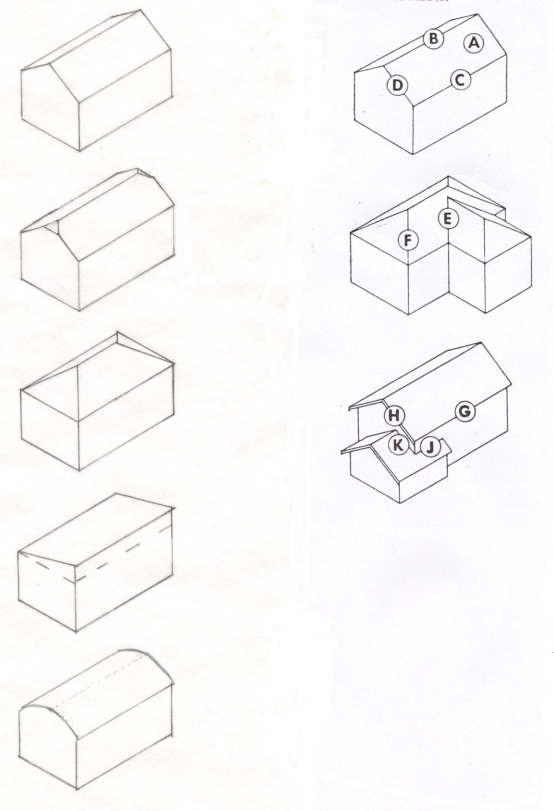
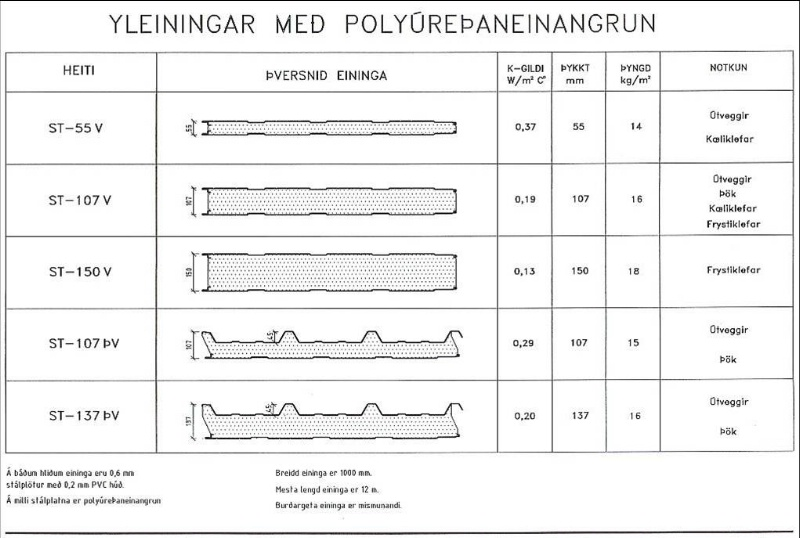
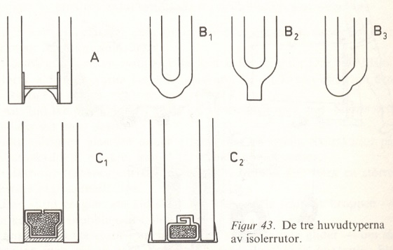
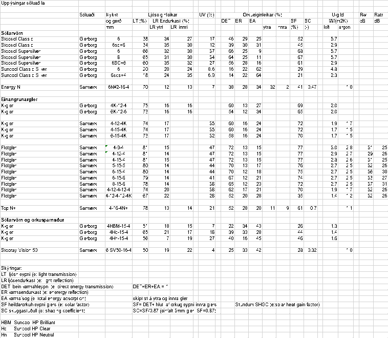

Háskóli Íslands – Umhverfis og byggingarverkfræðideild Húsagerð
Björn Marteinsson
7. 7. Byggingarhlutar og húsagerð
7.1. 7.1 Húsagerð og efni
Hús er einhver þrívíð afmörkun rýmis, sem þarf að þola visst ytra og innra álag og þar sem hægt er að stjórna inniaðstæðum. Algengustu burðarkerfin eru eftirfarandi; lóðrétt eru stoðir eða skífur og lárétt plötur eða bitar, eða samspili af þessu í rammavirki. Þrívíð burðarkerfi þekkjast einnig, s.s. skeljar, þrívíðir rammar (e: space frames) og tjöld (stöguð eða uppblásin).
Hús eru ýmist byggð á staðnum eða gerð úr einingum, þessar aðferðir hafa báðar sína kosti og galla. Langt fram eftir síðustu öld einkenndist íslenskur byggingamarkaður af litlum fyrirtækjum, sem almennt voru lítt burðug fjárhagslega og höfðu lítinn tækjabúnað. Steypa var lengst af síðustu aldar hífð í gálgum, þar sem vélaraflið voru algeng farartæki, byggingarkranar urðu ekki algengir fyrr en seinni hluta áttunda áratug tuttugustu aldar. Fram til þess réð handafl mestu um hversu mikla þyngd einstakir hlutir til byggingarframkvæmda gátu haft. Þessir þættir, og svo lítill markaður, réð miklu um hve seint byggingarmarkaðurinn tók upp t.d. kerfismót og að einingaframleiðsla náði ekki almennilega fótfestu (Mathiesen & Marteinsson, 2013).
Helstu kostir og gallar þessara tveggja aðferða; staðbyggt eða einingahús eru sýndir í töflu 7.1;
Tafla 7.1 Staðbyggt eða einingahús- kostir og gallar |
||
Kostir |
Gallar |
|
Staðbyggt |
Hentar vel þar sem stöðlun er lítil (ekki fjöldaframleiðsla) |
Unnið við óblíðar aðstæður, framleiðni því á stundum léleg og gæðatrygging erfið |
Málfrávik koma lítið að sök, auðvelt að laga á byggingarstað |
||
Auðvelt að aðlaga að flóknum formum og sérlausnum |
||
Einingahús |
Hentar vel í fjöldaframleiðslu |
Málnákvæmni skiptir sköpum, erfitt að laga skekkjur á byggingarstað |
Unnið við kjöraðstæður, möguleiki á góðri framleiðni og gæðatrygging auðveld |
Þétting einingaskeyta getur verið krefjandi, mistök rýra húsgæði verulega |
|
Hérlendis er efnisval til húsagerðar fábreytt og hefur þetta alla tíð sett svip sinn á íslenskar byggingar. Seint á nítjándu öld byrja menn að þreifa fyrir sér með notkun steypu til húsagerðar og ná mjög fljótt góðum tökum á efninu, jafnvel svo að snemma á tuttugustu öldinni var steypa orðin algengasta efni í nýbyggingum hérlendis. Í dag eru meira 75% allra útveggja í landinu úr steypu og er slíkt sennilega einsdæmi í heiminum. Framan af var sement flutt inn en árið 1958 hefst sementsframleiðsla hérlendis þegar Sementsverksmiðja ríkisins á Akranesi hóf rekstur. Sementsverksmiðjan hætti framleiðslu árið 2012 og er því svo komið á ný að sement er alfarið innflutt. Umfangsmikil notkun steypu hefur orðið til þess að byggingar eru óvenju þungar í samanburði við aðferðir sem tíðkast erlendis og þetta, ásamt oft erfiðum jarðvegsskilyrðum, takmarkaðri verktækni í byrjun og kannski jarðskjálftahættu, hefur síðan leitt til þess að grundun húsa er iðulega gerð með miklum jarðvegsskiptum.
Íslenskur byggingarmarkaður er smár og liggur fjærri öðrum mörkuðum Al-innlend byggingarefni, eða svo til, eru einvörðungu fylliefni og steinull (frá 1985). Önnur efni eru innflutt, ýmist sem hráefni til vöruvinnslu (t.d. frauðplast, gler og timbur í límtré) eða fullgerðar vörur og þá oft í neytendapakkningum. Byggingarefni hérlendis eru aðallega flutt inn frá Evrópu, Bandaríkjunum og Kanada, úr innflutningsskýrslum má sjá að stærstur hluti alls innflutnings kemur frá Evrópu, sjá töflu 7.2 sem unnin er upp úr gögnum frá Hagstofunni. Ekki hægt að skilja í sundur innflutning vegna bygginga annarsvegar og annarrar mannvirkjagerðar hinsvegar.
Veðurfar er rysjótt, meðalhiti sumarmánaða lágur borið saman við nágrannalöndin og kyndingartímabil langt. Almennt eru byggingar vandaðar miðað við það sem þekkist annarsstaðar og mikið lagt í innréttingar og innbú.
Staðbyggðar, steyptar byggingar, sem hérlendis eru oftast sem byggðar á malarfyllingu eru yfirleitt þungar (reiknað á flatareiningu í gólffleti) miðað við það sem gerist erlendis. Sement er orkufrekt í framleiðslu og efnisflutningar vegna steypu og fyllinga verða miklir, en orkunotkun í flutningum þó iðulega minni heldur en erlendar samanburðartölur sýna þar sem hérlendis þarf yfirleitt að fara stutta vegalengd að sækja fyllingarefni og stutt frá steypustöð til byggingarstaðar (Björn Marteinsson, 2002).
TShape1 afla 7.2 Skipting innflutnings 1999 eftir útflutningslöndum , Hagstofa Íslands (2000)
HShape2 ús eru sett saman úr fjölda hluta og efna, og kröfur sem einstakir húshlutar þurfa að uppfylla er af ýmsum toga. Það krefst umfangsmikillar þekkingar að henda reiður á öllum þáttum sem máli skipta og því er umfjöllun iðulega skipt niður eftir efnislögum og byggingarhlutum og fjallað um hvern og einn þátt sérstaklega. Þessi leið verður farin hér og þá nánast eingöngu fjallað um veðurþol, og þá hlíf sem hjúpflötum er ætlað að gefa en ekki fjallað um burðarþol, brunavörn og hljóðeiginleika.
Í riti sem Edgar Guðmundsson verkfræðingur skrifaði 1977 er fjallað ítarlega um fjölda þátta sem ástæða er að hafa þarf í huga (Edgar Guðmundsson, 1977). Í ritinu er gerð grein fyrir matslykli sem nota má til að meta eiginleika og gæði húshluta.
7.2. 7.2 Kröfur til hjúpflata almennt
Hjúpfletir bygginga verða fyrir margvíslegri áraun vegna veðurfars, innri aðstæðna og vegna notkunar. Þetta gerir margvíslegar kröfur til flatanna, og er til einföldunar rætt eins og byggingarhlutinn sé lagskiptur og kröfur til einstakra laga tilgreindar. Í reynd þá er lagskipting byggingarhlutanna oft óljós, og efnislögin oft fá þannig að sama efnislag getur þurft að uppfylla fleiri en eina af kröfunum svo tryggt sé að byggingarhlutinn í heild uppfylli væntingar sem til hans eru gerðar.
Hönnun byggingarhluta byggir alltaf á þekkingu á efniseiginleikum og notkun reiknilíkana, í sumum tilvikum má einnig kanna eftirá hvort væntingar séu uppfylltar.
Í Byggingarreglugerð er að finna almennar kröfur til mannvirkja og einnig sértækar kröfur varaðndi nánar tiltekin atriði er snerta m.a. hjúpfleti.
AÐKOMA, UMFERÐARLEIÐIR OG INNRI RÝMI MANNVIRKJA
6.1. KAFLI Markmið og algild hönnun.
6.1.1. gr. Markmið.
Mannvirki skulu þannig hönnuð og byggð að þau henti vel til fyrirhugaðra nota. Við ákvörðun á útliti þeirra, efnisvali, litavali og gerð skulu gæði byggingarlistar höfð að leiðarljósi.
Tryggt skal fullt öryggi fólks og dýra innan bygginga og á lóðum þeirra. Byggingarnar og lóðir þeirra skulu vera vandaðar og hagkvæmar m.t.t. öryggis fólks, heilbrigðis, endingar, aðgengis og afnota allra.
Við gerð og hönnun bygginga ber að taka tillit til orkunotkunar, áhrifa þeirra á umhverfið og gæta að hagkvæmni við rekstur, þrif og viðhald.
Ávallt skal leitast við að beita algildri hönnun þannig að byggingar og lóðir þeirra séu aðgengilegar öllum án sérstakrar aðstoðar.
Við gerð og hönnun bygginga skulu valin efni og aðferðir er henta við íslenskar aðstæður, leitast við að lágmarka neikvæð umhverfisáhrif, velja vistvænar lausnir þar sem það er mögulegt og miða hönnunina við allan líftíma þeirra. Leitast skal við að lágmarka auðlindanotkun og hámarka notagildi, hagkvæmni og þægindi notenda.
Við byggingar eða innan þeirra skal vera fullnægjandi aðstaða fyrir reiðhjól, barnavagna, hjólastóla, sleða o.þ.h. og geymslu þeirra í samræmi við eðli byggingarinnar.
Þess skal gætt að byggingar hafi eðlilega tengingu við lóð og annað umhverfi. Við hönnun og byggingu þeirra skal huga að eðlilegum innbrotavörnum.
6.3 KAFLI Ytra form og hjúpur mannvirkja.
6.3.2. gr. Hjúpur byggingar.
Veðurkápa byggingar skal standast álagskröfur vegna umhverfisþátta sem búist er við að mæði á henni vegna veðurfars, s.s. vindálags, regns, snjóálags, salts og sólar. Hún skal þannig gerð að bæði innan byggingar og við hana sé tryggð fullnægjandi hljóðvist, brunavörn, öryggi, loftgæði og birtuskilyrði auk annarra þátta sem taldir eru upp í reglugerð þessari.
Almennt skal velja efni í hjúp byggingar sem auðvelt er að viðhalda, þrífa og farga.
BURÐARÞOL OG STÖÐUGLEIKI
8.1. KAFLI Markmið og almennar kröfur.
8.1.1. gr. Markmið.
Hús og önnur mannvirki skulu ávallt gerð úr haldgóðum byggingarefnum, þola íslenskt veðurfar og þá áraun sem ætla má að þau verði fyrir. Burðarvirki mannvirkis skal vera fullnægjandi að gerð, þannig að mannvirkið sjálft eða einstakir berandi hlutar þess hvorki sígi óeðlilega né hrynji og komið sé í veg fyrir að formbreytingar verði umfram heimil mörk.
Tryggja skal fullnægjandi stöðugleika allra þátta mannvirkja á byggingartíma og koma skal í veg fyrir möguleg skaðleg áhrif á mannvirki af völdum veðurs. Steypumót, vinnupallar, stoðir, afstífingar o.s.frv., skulu því ávallt hafa fullnægjandi styrk.
þrír kaflar fjalla um efnisgæði;
8.3 Kafli Sement og steinsteypa
8.4 Kafli Stál og ál
8.5 Kafli Timbur og gler
HOLLUSTA, HEILSA OG UMHVERFI
10.1. KAFLI Almennar hollustukröfur til mannvirkja.
10.1.1. gr. Meginmarkmið.
Mannvirki skulu þannig hönnuð og byggð að heilsu og innra umhverfi sé ekki spillt, m.a. vegna hita og raka, hávaða, titrings, fráveitu, meindýra, reyks, úrgangs, mengunar í lofti, jarðvegi eða vatni, gasleka eða geislunar sem valdið getur óþægindum, vanlíðan, minna starfsþreki eða heilsutjóni fyrir þá sem þar dvelja. Tryggja ber að þessa sé gætt allan líftíma mannvirkisins.
Nota skal endurnýtanleg eða endurunnin byggingarefni eins og kostur er, þannig að við niðurrif sé mögulegt að endurvinna byggingarefnin þar sem slíkt er hagkvæmt frá fjárhagslegu og umhverfislegu sjónarmiði.
10.3. KAFLI Þægindi innilofts.
10.3.1. gr. Markmið.
Mannvirki skulu þannig hönnuð og byggð að þægindi hvað varðar hita raka og hreyfingu lofts á þeim svæðum þar sem fólk dvelur séu fullnægjandi og ávallt í eðlilegu samræmi við þær athafnir og þá starfsemi sem fram fer í mannvirkinu.
10.5. KAFLI Raki.
10.5.1. gr. Markmið.
Mannvirki skulu þannig hönnuð og byggð að vatn eða raki geti ekki valdið skaða á mannvirki í heild eða einstökum hlutum þess eða skapað aðstæður sem valdið geta óþægindum, slysum eða verið hættulegar heilsu manna, s.s. vegna myndunar myglu eða varasamra örvera.
Tryggja skal að grunnvatn, yfirborðsvatn, úrkoma, s.s. regn, slagregn, snjór eða krapi, raki í jarðvegi, neysluvatn, loftraki, byggingarraki eða þéttivatn geti hvorki skaðað mannvirki eða einstaka hluta þess, né rýrt eðlileg hollustuskilyrði innandyra.
10.5.5. gr. Varnir gegn rakaþéttingu.
Byggingarhlutar skulu þannig hannaðir og frágengnir að þeir geti ekki orðið fyrir skemmdum vegna uppsafnaðar rakaþéttingar… [og um loftun klæðninga, og vörn gegn hárpípuflutningi vatns frá undirstöðu].
ORKUSPARNAÐUR OG HITAEINANGRUN
13.1. KAFLI Almennt um orkusparnað.
13.1.1. gr. Markmið.
Við ákvörðun einangrunar í mannvirkjum ber að tryggja hollustu og þægindi innan mannvirkja jafnframt því að orkunýting sé hagkvæm og náttúruauðlindir nýttar á sjálfbæran hátt.
Helstu kröfur til hjúpflata eru:
Styrkur og stífleiki
Byggingarhlutinn þarf almennt að hafa nægan styrk og stífleika til að þola ytra álag, bæði lóðrétt og lárétt sbr. tilvísun í Byggingarreglugerð hér að ofan. Álag sem um ræðir er vegna eiginþyngdar, vind- og snjóálags, jarðskjálftaálags auk áraunar vegna notkunar.
Í Byggingarreglugerð gr. 8.1.4 er fjallað um undirstöður og kröfur um hámarksformbreytingar burðarvirkja og byggingarhluta í gr. 8.2.4 og 8.2.5.
Vatns- og regnvörn
Hjúpur hússins fær á sig vætu frá úrkomu og þarf að vera tryggt að slíkt valdi ekki leka né skemmdum á yfirborðslagi – Byggingarreglugerð; gr. 10.5.1.
Í Byggingarreglugerð gr. 10.5.3 og 10.5.4 eru settar fram kröfur um minnsta þakhalla eftir efnistegundum og frágangi, í gr. 10.5.5 vatnsvörn undirstöðu og gólfs og gr. 8.2.6 fjallar um slagregnsþéttleika glugga (skulu vera þéttir við 1100 Pa mismunaþrýsting).
Regnþéttleika afmarkaðra byggingarhluta má rannsaka með slagregnsprófun í rannsóknastofu.
Vindvörn
Þrýstistigull verður yfir byggingarhluta vegna vinds, hitamunar og hugsanlega áhrifa loftræsikerfa. Frágangur byggingarhlutanna þarf að vera þannig að lofthreyfing rýri ekki einangrunargildi (Byggingarreglugerð gr. 10.5.5 og 13.4.1) og að húsið í heild sé nægjanlega loftþétt (Byggingarreglugerð 13.5.1).
Vindþéttleika afmarkaðra byggingarhluta má rannsaka með þéttleikaprófun í rannsóknastofu, loftþéttleika heilla bygginga má athuga með mælingum á staðnum.
Rakavörn
Hjúpfletir verða fyrir rakastigul vegna mismunandi aðstæðna sitt hvoru megin byggingarhlutans, og tryggt þarf að vera að rakaaðstæður í byggingarhluta valdi ekki skemmdum né óhollustu – Byggingarreglugerð; gr. 13.4.1 (almennt ), gr. 10.5.2 (undirstöður, kjallaraveggir og gólf), 10.5.5 (veggir).
Einangrun
Einangrun byggingarhluta þarf að nægja til þess að á hagkvæman hátt sé hægt að halda kjörhita í byggingunni, Byggingarreglugerð gr. 13.1.1. Hitaástand í byggingarhluta þarf jafnframt að vera þannig að ekki sé hætta á rakaþéttingum á og í byggingarhluta, Byggingarreglugerð gr. 13.1.1.
Byggingarreglugerð gerir kröfu til þess að einangrun sé almennt óbrennanleg, þó með nokkrum undantekningum gr. 9.6.10.
Einangrun byggingarhluta er hægt að mæla beint (sem stendur ekki til búnaður til slíks í landinu) eða með IR myndun þar sem hitastig yfirborða er mælt (þannig má einnig leggja mat á einangrunargildi).
Brunaþol
Byggingarreglugerð gerir kröfur til brunaþols og brunaeiginleika margra byggingarhluta, bæði hjúpflata og einnig byggingarhluta innan byggingar – Byggingarreglugerð; kafli 9.
Á rannsóknastofu (þó ekki hérlendis) má kanna brunaeiginleika og brunaþol byggingarhluta.
Hljóðeiginleikar
Byggingarreglugerð, kafli 11, vísar til staðals ÍST 45 varðandi kröfur til hljóðeiginleika (hljóðdempunar) bygginga og byggingarhluta.
Auðveldlega má mæla hljóðdeyfingu byggingarhluta og ómtíma vistarvera.
Sólargeislun og ljóshleypni
Sólargeislun mun hafa áhrif á ytri yfirborðshita byggingarhluta og þarf að gæta þess að hitinn, eða bein áhrif geislunar (einkum UV geislunar) valdi ekki skemmdum á efnum eða byggingarhluta. Þegar ljóshleypni er æskileg (gluggar) þá þarf að gæta þess að hún sé bæði nægjanleg og af þeirri tegund sem óskað er (birtustig og litur).
Notagildi, hagkvæmni, ending, rekstur og viðhaldsþörf
Við hönnun bygginga þarf að huga að notagildi og hagkvæmni bygginga yfir allan notkunartímann, og því þarf að meta stofnkostnað, rekstur og viðhaldsþörf. Einnig er ástæða til að hafa í huga hvernig viðhaldi verður hagað og að byggingin í heild hafi næga aðlögunarhæfni og sveigjanleika til að taka breytingum í takt við breyttar aðstæður.
Notkun óendurnýjanlegra náttúruauðlinda og áhrif á umhverfi
Meta þarf áhrif mannvirkisins varðandi notkun óendurnýjanlegra auðlinda og hvaða áhrif framleiðsluferli og efnanotkun hefur á umhverfi (efnagjöf í framleiðslu, á notkunartíma og förgun) – Byggingarreglugerð gr. 6.1.1 og 6.3.2.
Útlit
Útlit er mikilvægur þáttur í allri hönnun, byggingar eru stór hluti af umhverfi nútímamannsins og hefur ugglaust veruleg áhrif á upplifun hans í daglegu lífi- Byggingarreglugerð; gr. 1.1.
7.3. 7.3 Einstök efni, efnislög og frágangur
7.3.1 Einangrun
Svo til öll einangrun sem er notuð í byggingum fellur í tvo meginflokka; (i) gler- og steinull, og (ii) plasteinangrun. Eiginleikar eru þó talsvert mismunandi milli flokkanna og eins eftir eðlisþéttleika efna í hvorum flokki fyrir sig. Kröfur til gerðar og gæða einangrunar fer eftir gerð og uppbyggingu byggingarhluta;
Einangrun í timburbyggingarhlutum (brennanlegir byggingarhlutar) er yfirleitt annað hvort glerull eða steinull, en einangrun á óbrennanlegt undirlag (steypu) og varin af múrlagi getur verið hvort sem er frauðplast EPS (e: expanded polystyren) sem er algengasti kosturinn eða harðpressuð steinull. Frauðplasteinangrun á steypta veggi er iðulega um 20 kg/m3, en steinull í létta byggingarhluta er 22 – 30 kg/m3 (Léttull, Þéttull).
Einangrun undir botnplötu þarf að hafa nægjanlegan stífleika og rakaþol, og er þá iðulega gerð krafa um burðargetu við ákveðna samþjöppun. Frauðplasteinangrun undir steypta botnplötu þarf að vera 22-24 kg/m3, en steinull er iðulega um 100 kg/m3.
Einangrun í viðsnúnum þökum þarf að hafa nægan styrk og stífleika, en einnig lága rakadrægni. Iðulega er gerð krafa um freydda plasteinangrun t.d. XPS (e: extruded polystyren) s.s. Roofmate (framleiðsluheiti). Frauðgler þekkist einnig í slíkum tilfellum og þess má vænta að formsteypt (ekki skorin, þá tapast verndarhúðin) urethaneinangrun uppfylli kröfur einnig.
Sjá einnig Guðmundur Halldórsson og Jón Sigurjónsson (1992), Björn Marteinsson (1991).
7.3.2 Vind- og rakavarnarlög
Vindvörn skiptist annarsvegar í gustvörn einangrunar, til að draga úr áhrifum lofthreyfinga á einangrunargildi, og hinsvegar vindvörn byggingarhluta. Efnislagið getur t.d. verið rakaþolin gifsplata, vindpappi, trétrefjaplata eða krossviður- í leiðbeiningablaði frá Brunamálastofnun ríkisins var þó lagst gegn því að hafa brennanlegt lag að loftræstu bili í útveggjum. Í Byggingarreglugerð eru engin ákvæði um leyfilega loft- eða rakahleypni vindvarnarlagsins, en í eldri reglugerð var krafa um að hámarksrakamótstaða efnislagsins væri sem samsvarar sd<2 m (<20 PAM). Góð viðmiðun er að rakamótstaða vindvarnarlags sé mest 1/10 af mótstöðu rakavarnarlagsins. Í Noregi (Geving & Tue) er miðað við að lofthleypni vindvarnarlags sé undir 0,050 m3/m2, Pa,h og rakamótstaðan sd<1,8 .
Rakavörn húss er til að tryggja að ekki verði skaðlegur rakaflutningur frá hituðu rými og út í byggingarhluta. Efnislagið er oft gert úr öldrunarþolinni polyethylen fólíu (oft 0,15-0,2 mm), t.d. Þolplast (framl. Plastprent), eða álfólíu á pappír eða styrkt með plastfólíu. Dæmi um slíkar álfólíur er t.d. Polykraft (framl. Polysheet a/s; netstyrkt, pappír og plast) og ýmsar vörur úr álfólíu sem er plastlögð (með PE) beggja vegna. Í vissum tilvikum er leitað að lagi sem gefur minni rakamótstöðu þegar æskilegt er að byggingarhlutinn geti þornað inn, dæmi um slíkt er t.d. Hygrodiode (framl. Icopal; filtdúkur með álímdum álrenningum) og krossviður í sumarhúsum. Í Byggingarreglugerð eru engin ákvæði um leyfilega rakahleypni rakavarnarlagsins, en í eldri reglugerð var krafa um að lágmarksrakamótstaða efnislagsins væri sem samsvarar sd>48,8 m (>500 PAM). Erlendis er iðulega miðað við, þegar rakaálag er takmarkað, að rakavörn skuli hafa mótstöðu sd> 9,8 m, sem samsvarar >100 PAM (Icopal, 1996).
Það er reynsla fyrir því að rakavarnarlagið verður alla jafna betur frágengið og loftþéttara heldur en vindvarnarlagið, og fyrrnefnda efnislagið er því aðalvindvörn hússins.
7.3.3 Vatnsþéttilög og vatnsvörn;
Vatnsþéttilög í byggingum geta verið opin fyrir veðuráraun (t.d. ber þakklæðning) eða varin (s.s. þéttilag undir fargi). Áraun sem slík þéttilög verður fyrir getur því verið af mjög mismunandi toga og verður að hafa það í huga við efnisval og frágang. Óháð legu þá er gerð sú krafa til vatnsþéttilaga að þau séu þétt og að viðhaldsþörf sé stillt í hóf. Sjálfsagt er að gera þá kröfu til jafnvel vel aðgengilegra þéttilaga að ending þeirra sé minnst 20-30 ár, fyrir illa aðgengileg þéttilög verður þá væntanlega að gera enn hærri kröfur.
Óvarin eða lítt varin þéttilög, t.d. í þökum, verða fyrir mjög fjölbreyttri áraun, s.s. efnaáraun frá umhverfi (m.a. andrúmslofti og úrkomu), beinni áraun vegna vind-, vatns- og snjóálags, áraun frá umferð (a.m.k. punktálag frá vinnu- og eftirlitsaðilum), hitaáraun , rakaáraun og hugsanlega beinni áraun vegna ísmyndunar á þakefninu. Varin þéttiefni fá aðeins brot af ofanskráðu álagi, og munar einkum um að áraun frá veðurfari og umhverfisálag verður almennt allt einfaldara.
Þar sem vatnsþéttilög þurfa eðli málsins samkvæmt að vera vatnsþétt þá er erfitt um vik að ganga frá þenslufúgum í efnislaginu, samfelldir fletir verða því alla jafna stórir. Öll áraun sem veldur stærðarbreytingu í þéttilagi eða undirlagi, t.d. vegna raka- eða hitabreytinga og rýrnunar, veldur því að innri áraun (spenna) í þéttilaginu hleðst upp og miklir kraftar geta orðið við festingar. Almennt er því leitast við að hafa slík þéttilög teygjanleg og allsterk sem gerir miklar kröfur til efniseiginleika og þá sérstaklega til öldrunareiginleika. Ef efnislagið tapar teygjanleika og styrk við öldrun þá mun það hafa örlagarík áhrif á þéttleika lagsins.
Efnislagið verður alltaf fyrir efnaáhrifum frá umhverfi sínu en dálítið misjafnt eftir staðsetningu. Efnið getur t.d. orðið fyrir súrum eða alkalískum (basískum) áhrifum, áraun frá fitu eða olíum sem komast á efnið, efni í andrúmslofti hafa áhrif auk þess sem útfjólublátt ljós, hiti, loftraki og bein væta hefur almennt áhrif á niðurbrot efna. Þéttilag sem verður fyrir beinum áhrifum vinds getur fengið á sig mjög mikið álag, og þar sem lagið hefur almennt mjög litla möguleika á að dreifa álagi þá getur vindsog valdið mjög staðbundnu álagi við einstakar festingar. Ef vatn frýs á þéttilaginu þá getur ísinn bitið sig í efnið, með lækkandi hita þá rýrnar ísinn og gefur teygjuáraun á þéttilagið. Við -10 °C springur ísinn og staðbundin áraun á þéttilagið getur þá orðið mjög mikil.
Eiginleikar sem þéttilag þarf að hafa eru fölmargir, en mjög háð staðsetningu hvað skal uppfyllt. Þeir eiginleikar sem koma til tals þegar velja skal þéttilag eru eftirfarandi (upptalningin gildir sérstaklega um pappa og dúka):
Styrkeiginleikar - Togþol hrein togáraun í efnislagi
Rifstyrkur, m.a. vegna áraunar í samsetningum og frá festingum
Stansstyrkur, hætta á gegnumstönsun vegna umferðarálags
Stífleiki - Teygjanleiki undir álagi, m.a. háð hitastigi
Efnaþol - Olíur, fita, sýrur og alkalísk áhrif frá andrúmslofti, s.s. súrefni, ozon, loftraki og ýmiskonar mengun
Útfjólublátt ljós - Áhrif á öldrun, m.a. rýrnun og tap á styrk og stífleika
Rakaþol og þenslur - Áhrif hreyfinga á öldrun m.m
Hitaþol - Áhrif hitaöldrunar og áhrif hreyfinga á öldrun
Útlit - Útlit sýnilegra þéttilaga
Kröfum til eiginleika og prófunum er m.a. lýst í Sænskum staðli SS 23 68 05 og SS 02 15 82, og heimildum K. Nordin, HusAMA 83 (1983) , RA 83 HUS - Råd och anvisningar till Hus AMA 83(1983), E. Törnkvist (1987) og er sú síðastnefnda langítarlegust.
Iðulega samanstendur vatnsvörn byggingarhluta af tveim efnislögum; ystu klæðningu með viðbótarþéttilagi þar undir og oft er loftræst bil þarna á milli.
Dæmi; Þakjárn og pappalag (hefðbundið létt þak).
Veggklæðning, loftræst bil og vatnsfráhrindandi innra lag (vindvörnin)
Þegar þéttilagið er eitt efnislag þá er vitaskuld enn mikilvægara að eiginleikar lagsins séu vandaðir og frágangur góður.
Dæmi; Pappa- eða dúkaþak
7.3.4 Klæðning sem ysta byrði
7.3.4.1 Málmklæðningar
Stál, almennt zink eða ál-zink (alusink) húðað og málað, yfirleitt bárað
Ál, málað eða ómálað; ýmist bárað eða slétt
Titan-zink; sléttar plötur fyrir læstar klæðningar
Eir; sléttar plötur fyrir læstar klæðningar
Af málmklæðningunum eru stálklæðningar algengastar. Stál er sem slíkt ekki tæringarþolið og þarf því að verja það sérstaklega. Þessi vörn er allajafna tvíþætt; járnið er varið með fórnarmálmi og síðan málað til enn frekari varnar. Í eftirfarandi texta er fjallað sérstaklega um stálklæðningar en hlutar umfjöllunar geta einnig gilt um álklæðningar, sem þarf þó ekki að verja með fórnarmálmi.
Málmkjarni stálplatna er varinn gagnvart tæringu með húðun. Áður var eingöngu um sinkhúðun að ræða á stálplötum, en nú býðst einnig 55%-álsink (um 55% ál, 43,4% sink og 1,6% kísill, kom á markað í Evrópu 1979) og ný húð með nafnið GALFAN (5%-álsink). 55%-álsink og 5%-álsink húðirnar eru taldar gefa betri vörn gagnvart tæringu, einkum í söltu umhverfi. Þessar húðir eru jafnframt teygjanlegri heldur en sinkið, og þola því betur völsun og stönsun. Plötur sem varðar eru með fyrsttöldu (hreint sink) og síðasttöldu (Galfan) húðunum má sjóða eða lóða, og gerir það ýmsan frágang auðveldari.
Plöturnar eru húðaðar með því að dýfa þeim í málmbað, og kemur þar af nafnið „heitgalvanísering“. Þykkt húðarinnar er stillt af með hnífum eða blæstri, og fæst þá nokkuð jafnþykk húð. Plöturnar eru þannig varðar beggja vegna, og er vörn húðarinnar almennt gefin upp í magni á fermetra plötuefnis (g/m2). Miðað er við að minnst 40% magnsins sé á hvorri hlið. Oft er miðað við ákveðna gæðaflokka td. Z 275 eða Z 350, þar sem tölurnar gefa upp magn af sinki. Þykkt húðarinnar er einnig stundum gefin upp beint í þúsundustu hlutum úr mm (m), og miðað við ofannefnda flokka verður þykktin hvoru megin 20 - 25 m. Þessi tæringarvörn nægir þó tæplega ein sér, enda eyðist hún upp og veðrast með tímanum.
Útfrá þykkt varnarlagsins og áætlaðri tæringu má ætla að ending tæringarvarnarinnar sé bilinu 5 - 10 ár í stórborgum, en 25 - 35 ár í sveitum, varðandi tæringu hérlendis sjá t.d. B. Marteinsson ofl. (2005). Þykkari varnarhúð myndi vitaskuld lengja endingartímann, en þá er platan jafnframt orðin viðkvæmari fyrir krappri beygingu. Almennt er því gert ráð fyrir að plöturnar séu einnig varðar með lífrænni yfirborðsmeðhöndlun, t.d. málningu.
Athuganir erlendis benda til þess að 55%-álsink húðin sé mun betri tæringarvörn heldur en sink húðin, og geti jafnvel enst þrefalt til fjórfalt lengur við sömu aðstæður. Magn af álsink húð er gefið upp á sama hátt og gert er fyrir sink húðina, og er í Svíþjóð einkum miðað við tvo flokka AZ 150 og AZ 185. Þrátt fyrir minna magn í g/m2, þá er þykkt varnarlaganna sú sama og fyrir sink húðirnar eða 20 - 25 m (minni eðlisþungi).
Þegar gefnar eru upp þykktir á klæðningarplötum, þá er almennt miðað við þykkt málmkjarnans að viðbættum varnarlögunum, en yfirborðsmeðhöndlun ekki talin með. Við útreikninga á styrk þarf að hafa í huga að kjarninn er því nokkuð þynnri heldur en uppgefin plötuþykktin, eða svo nemur um 0,06mm, en heildar þykkt báraðra klæðningarplatna er yfirleitt 0,4-0,6 mm.
Þegar minni háttar skemmd verður á málmplötu sem er sink varin, t.d vegna klippingar eða festinga, þá flytjast sink jónir yfir á óvarinn málmkjarnann og vernda hann gegn tæringu (fórnarvörn). Til þess að þessi vörn sé virk þarf ákveðið magn af sinki að vera til staðar, og er magnið háð umfangi skemmdar sem oft jafngildir þykkt kjarnans (t.d. við klippingu). Með rannsóknum hefur fundist að um 20 m sinkhúð nægir til að vernda kjarna sem er 0,5 - 1,5 mm. Í ál-sink húðinni er hlutfallslega mun minna af sinki heldur en í jafnþykkri sinkhúð, og má því ætla að þessi vörn sé því minni. Þetta er þó ekki fullkannað ennþá, en talið fullvíst að vörnin sé næg fyrir aðstæður þar sem ekki mæðir mikið á efninu. GALFAN er talið gefa jafngóða vörn og hefðbundin sinkhúð.
Áður fólst yfirborðsmeðhöndlun eingöngu í því að hver húseigandi málaði sitt járn, og er reynsla af slíku góð hérlendis. Algengt er að mála þurfi járn á um 10 ára fresti. Málmklæðningar úr stáli og áli er nú hægt að fá frá framleiðanda með eða án yfirborðsmeðhöndlunar. Framleiðendur bjóða upp á margar mismunandi gerðir yfirborðsmeðhöndlunar, sem hafa innbyrðis nokkuð ólíka eiginleika. Algengastar eru ýmiskonar málningar með heildarþykktir (grunnur meðtalinn) um 20 - 30 m, en einnig eru til plastfilmur með mun meiri þykktir. Plöturnar eru meðhöndlaðar beggja vegna, en meðhöndlun á bakhliðinni er almennt mun þynnri heldur en gildir um þá hliðina sem út snýr. Ef ástæða er til að halda að áraun verði svipuð á bakhlið og framhlið, þá er eðlilegt að fá efni með jafngóðri vörn beggja vegna. Plöturnar eru alltaf meðhöndlaðar fyrir völsun. Teygjuþol yfirborðshimnunnar er mismunandi eftir málningargerð, og getur það haft áhrif á val yfirborðsáferðar ef vitað er fyrir að beygja þarf efnið mjög krappt, tafla 7.3.
Tafla 7.3 Yfirborðshúðir á ál- og stálklæðningum |
|||
Yfirborðshúð |
Þykkt húðar (m) |
Beygjuradíus, margfeldi |
|
framhlið |
bakhlið |
af þykkt efnis t |
|
PVC - plastisol |
100 - 200 |
15 |
0 t |
PVF (fólía) |
40 - 500 |
15 |
2 t |
PVF2(80/20) |
25 - 30 |
15 |
0 - 1,5 t |
PVF2(50/50) |
25 - 30 |
15 |
0 - 1,5 t |
Silikonpolyester |
25 - 30 |
15 |
3 - 4 t |
Málmlakk 1) |
20 - 25 |
15 |
0 - 1 t |
Akryllatex |
20 - 30 |
15 |
1 - 2 t |
Polyester með ál fylliefni, eingöngu notað á ál.
Yfirborðsáferðirnar hafa mismunandi þol gegn útfjólubláu ljósi, og upplitast því mismunandi auðveldlega. PVF2 þolir ljós vel og upplitast síður en margar aðrar. Almennt gildir að litirnir dofna og missa glans með tímanum, og er þessi breyting meira áberandi á dökkum litum heldur en ljósum. Sérstaklega virðist sem bláum litum sé hætt við upplitun.
Dæmigerð uppbygging klæðningarplötu getur verið í samræmi við mynd 7.1
Framhlið (úthlið)
Yfirborðshúð;
Yfirlag
Grunnur
Tæringarvörn - bara á stál
Shape3
Málmkjarni
Bakhlið
Tæringarvörn - bara á stál
Grunnur
Mynd 7.1 Uppbygging málmklæðningar
Mýkri málma s.s. ál, eir og titan-sink er hægt að leggja slétt, og eru plötuskeytin þá fölsuð saman. Algengast er þó að forma plöturnar á einhvern hátt til að auka stífleika þeirra. Þetta er einkum gert með með tvennu móti, völsun og stönsun.
Af völsuðum prófílum eru ýmiskonar báruprófílar algengastir. Einnig þekkist að valsa plötur þannig að garðar myndast hornrétt hvor á annan og fæst þannig aukinn stífleiki, dæmi um þetta eru ýmiskonar burðarprófílar og einnig þaksteinseftirlíkingar (td. Decra plöturnar).
Plötur í veggjaklæðningar má móta í kasettur með stönsun, en þetta hefur til þessa verið dýr leið. Stansarnir hafa verið dýrir, og því þurft að stansa mikið magn til að ná verði niður. Með aukinni notkun plastefna í stansana hefur verðið farið lækkandi.
Styrkur málmklæðninga
Styrkur klæðninga fer eftir málmgerð, þykkt kjarnans og prófílhæð. Prófílhæðin er mjög mismunandi eftir því til hverra nota platan er ætluð, en er iðulega á bilinu 10 - 120 mm. Hár prófíll er alla jafna sterkari heldur en lágur, og þekkist að nota slíkar plötur sem hluta af burðarkerfi húsa. Plötur með mikla prófílhæð eru dýrari klæðning heldur en plötur með lágan prófíl, og eru plötur fyrir veggjaklæðningu því oft með prófílhæð á bilinu 20 - 50 mm.
Framleiðendur gefa upp styrk platna sinna fyrir mismunandi prófíla og þykktir. Upplýsingarnar eru almennt á töfluformi þar sem er gefið upp hámarksbil milli festinga (L) fyrir mismunandi álag. Upplýsingarnar miðast oft við veggklæðningar (klætt á lektur), en má auðveldlega nota fyrir þakklæðningar einnig. Töflur frá sænskum aðilum miðast yfirleitt við að útbeygja milli festipunkta sé innan við L/90 fyrir veggklæðningar, en L/200 ef gera skal sérlega strangar kröfur til útlits. Framleiðendur mæla með að þegar haflengdin er komin upp í 3 - 8m þá skuli útbeygjan vera minni en L/150.
Hérlendis verður fjöldi festinga til að taka upp krafta frá vindsogi oftast afgerandi varðandi þéttleika þeirra í venjulegum vegg- og þakklæðningum, svo beygjustyrkur platnanna verður ekki ráðandi.
Tæring
Ef tveir málmar snertast getur orðið galvanísk tæring (jóna-flutningur milli efnanna), og fer tæringarhraðinn vaxandi með auknum spennumun, tæringarflatarmáli og leiðni (gengur t.d. hraðar ef raki er til staðar). Spennumunurinn ákvarðast af legu efnanna innbyrðis í svo kallaðri spennuröð, sjá töflu 7.4.
Tafla 7.4 Spennuröð * |
|||
Efnahvarf |
E0(volt) |
||
Katóða (eðlari endi raðarinnar) |
Au í Au3+ |
+1,5 |
|
Ryðfrítt stál (margar gerðir) |
passíft |
||
Cr |
passíft |
||
… |
|||
Cu í Cu2+ |
|
||
H |
Viðmiðun ! |
||
Cr |
aktíft |
||
Ryðfrítt stál (margar gerðir) |
aktíft |
||
Stál (Fe) |
|||
Ál |
|||
Zn í Zn2+ |
|
||
Mg í Mg2+ |
|
||
Anóða (óeðlari endi raðarinnar) |
Na í Na+ |
|
* spennuröðin er alltaf ákvörðuð fyrir ákveðinn vökva (e: electrolyt) og viðmiðunarefni (e:reference); hér: hafsvatn og vetni
Ál liggur fyrir neðan stál og álið tærist því ef ál og stál liggja saman. Þar sem ál er fyrir neðan vel flest efni í spennuröðinni (af algengum efnum aðeins sink og magnesium fyrir neðan), þá er áli mjög hætt við tæringu ef það kemst í snertingu við sterkan lút eins og t.d. blauta steypu.
Þegar hætta er á galvanískri tæringu, þá skal gæta þess að tæringarflötur þess efnisins sem tærist meira (er neðar í spennuröðinni) sé verulega stærri heldur en hins, svo skemmdir verði í lágmarki. Þetta gildir vitaskuld sérstaklega fyrir festingar o.fl. sem oft hafa mjög lítið umfang (þverskurðarflatarmál).
Almennt ætti alltaf að velja festingar úr sama efni og klæðningin ef þess er kostur. Ryðfrítt stál liggur hinsvegar vel fyrir ofan bæði ál og venjulegt stál, og má því nota festingar úr því í hvort klæðningarefnið sem vill.
Festingar
Festingar eru almennt efnislitlar og styrkur þeirra minnkar því hratt ef tæring á sér stað. Tæringarhættan er jafnframt veruleg þar sem festingar tengja almennt saman tvö efni sem geta haft mismunandi spennueiginleika (sjá spennuröð). Þar sem tvö efni leggjast saman er meiri hætta á að vatn geti setið, og vætutími (sbr. kafli 5) getur því verið langur með aukna tæringarhættu í för með sér. Jafnvel haus festinga getur á þennan hátt aukið vætutíma við festinguna.
Allt timbur er súrt, og rakt timbur er því mjög tærandi umhverfi fyrir festingar. Miklu varðar því að tæringarþol festinga sé nægjanlegt.
Aðrar tegundir klæðninga
Timbur og trjákennd efni:
Timburborðaklæðningar og jafnvel spónaklæðningar
Krossviður (oft rásaður)
Trétrefjaplötur
Ýmsar plötuklæðningar;
Plastklæðningar; almennt báraðar til að gefa styrk
Plötur úr polyethylenkjarna með áli beggja vegna
Plötur úr þéttpressuðum sellulósakjarna og plasthúð beggja vegna
Sementsbundnar, trefjastyrktar plötur
Plötur úr polyester, með eða án kvarsmulnings
Keramíkflísar
Gler
7.3.5 Tjörudúkar og þakdúkar
Tjörudúkar (þakpappi)
Í textanum eru notaðar skammstafanir í samræmi við sænskar venjur.
Tjörudúkar sem þéttilag samanstendur af tjöru (oxuð gufueymuð tjara, einkennd með OA) og einhverskonar vef, efnislagið hefur síðan iðulega yfirborðsmeðhöndlun til að auka meðfærileika, veðrunarþol og til hlífðar. Dúklagið er byggt upp þannig að vefur er vættur með tjöru og síðan er myndað yfirborðslag beggja vegna með tjöru. Vefurinn sem um ræðir getur verið margskonar, og ræður vefurinn mestu varðandi meðfærileika og styrk pappalagsins auk þess að hafa áhrif á endingu. Tjörudúkur er almennt ætlaður sem vatnsvörn og er þá talsvert tjöruríkur og því með háa rakaflæðimótstöðu, en einnig þekkist notkun dúks sem vindvörn og er þá dregið úr tjörumagninu til að rakaflæðimótstaða efnislagsins verði ekki of mikil.
Í tjörudúk vegur vefurinn lítið í samanburði við tjöruna, þyngd dúks (kg/m2) segir því talsvert um tjörumagnið, og þar með um vatnsþol og rakamótstöðu. Góður tjörudúkur undir ystu klæðningu er t.d. talinn þurfa að vega minnst 1 kg/m2.
Í sænskum staðli er skilgreint hvernig einkenna skuli einstaka þætti varðandi uppbyggingu lagsins. Gefnir eru upp einkennisstafir fyrir tjöru, vef og yfirborðsmeðhöndlun og verða þessi einkenni notuð hér.
Vefur
Vefurinn er burðarlag dúklagsins og getur verið af ýmsum toga. Vefefnið er valið með tilliti til þess hvaða eiginleikar eru æskilegir í laginu.
Pappa-fílt (L)
Þetta er elsta burðarlagið og inniheldur minnst 85% textíl-trefjar (úr ull) en afgangurinn er úr sellulósa (pappírstrefjar). Vefurinn hefur mjög góða viðloðun við tjöruna og t.d. betri styrkeiginleika heldur en berg(mineral)þráða vefur (M).
Ókostir pappafíltsins eru að efnið er lífrænt og vatnsdrægt, þetta veldur því að efnið hentar síður á mjög hallalitla fleti þar sem vatn getur staðið uppi. Flest eldri pappaþök eru klædd með pappa af þessari gerð (t.d. almennt sænsk þök byggð fyrir miðjan áttunda áratuginn).
Bergþráða-fílt (M)
Vefurinn inniheldur 70% míneralþræði en afgangurinn er vatnsþolið bindiefni. Þetta er ólífrænt burðarlag og óvatnsdrægt, en með lítinn styrk. Vefurinn er ekki notaður lengur í tjörudúkaframleiðslu.
Polyestervefur (P)
Vefurinn er uppbyggður úr fjölliðum og hefur mikla teygju og styrk. Vefurinn hefur smáar rakahreyfingar en getur við óhagstæðar aðstæður brotnað niður vegna ”hydrolysu”. Þegar gera þarf miklar kröfur til dúklagsins vegna væntanlegra hreyfinga í undirlagi eða ísmyndunar á þakinu þá er dúkur með þessum vef gjarnan notaður í dag (Svíþjóð).
Glertrefjavefur (G)
Glertrefjavefur hefur betri styrk-og teygjueiginleika heldur en bergþráðavefurinn. Vefurinn er jafnframt lagður með þykkara tjörulagi og er því tiltölulega ónæmur fyrir raka.
Í Danmörku og Noregi er vefur af þessari gerð notaður til jafns við polyestervef.
Tjara
Með íblöndun (modifiering og trefjar) af fjölliðum má breyta eiginleikum tjörunnar talsvert, og er þetta einkum gert til að auka teygju efnisins m.a. við lágt hitastig. Efnisblandan er ýmist notuð beint sem yfirborðshúð á vef dúklagsins eða að búin er til filma úr því sem síðan er sett á dúkinn. Slíkar blöndur geta haft prýðilegt veðrunarþol og haldið fullri teygju niður í -15°C.
Tjara sem er notuð til inndreypingar á vefnum er einkennd með A en tjara fyrir yfirborðsmeðhöndlun vefs með Y.
Yfirborðsmeðhöndlun
Yfirborðsmeðhöndlunin getur verið sandur eða talkúm til að koma í veg fyrir að dúkurinn klístrist saman í rúllunum í geymslu (einkennt með Y), eða dúkur með raunverulegu hlífðarlagi úr einhverskonar sandi (t.d. smágerð basalt-, granít-, skiffer eða tálgusteinskorn) og er þá einkenndur með bókstafnum S. Í síðara tilvikinu (S) hlífir yfirborðsmeðhöndlunin asfaltdúknum fyrir útfjólubláuljósi og eykur þol dúksins gagnvart beinni áraun og bruna.
Dúklagið hefur yfirleitt slétta bakhlið, en undantekning frá þessu er dúkur með ísettum grófum kornum (t.d. „lättklinker“ eða polystyren) á bahkliðinni (einkennt með Ko). Þessi dúkur er ætlaður til að punktlímast á undirlag og gefa þannig þrýstingsútjöfnun, dúkurinn er því sérstaklega ætlaður á loftþétt undirlag s.s. steypu. Jafnframt dreyfir kornótt bakhliðin og punktlímingin þenslum á stærri flöt ef miklar þenslur eiga sér stað (t.d. yfir sprungum).
Frágangsdeili
Almennt gildir að frárennsli má ekki standa hærra heldur en 50mm yfir lægsta punkti þaks, að niðurbeygju undirlags meðreiknaðri [HusAMA 83, 1983]. Einnig ber að hafa í huga að hætta er á að dúkurinn skemmist verði hann fyrir togáraun. Alltaf þarf að hafa í huga að svigrúm sé til þess að þétta dúk að öðrum efnislögum t.d. dúkur - veggur, dúkur-niðurfall.
Tjörudúksþök eru oft byggð upp úr minnst tveim lögum, þó svo einfalt pappalag þekkist einnig. Í tveggja laga þaki er neðra lagið (undirdúkurinn) fest á berandi undirlag og yfirlagið heillímt ofan á. Undirdúkurinn er alltaf valinn útfrá gerð undirlags, tegund festinga og þakhalla. Á mynd 7.2 er sýnt dæmi um dúklögn á borðaklæðningu. Þegar dúkur er þéttur að öðru byggingarefni, t.d. steyptum vegg þarf að gæta þess að skeytin geti tekið upp mismunahreyfingu og að skeytin verði jafnframt vatnsþétt, mynd 7.3 sýnir dæmi um slíkan frágang.
{kind=link}
Mynd 7.2 Tjörudúkur á borðaklæðningu (heimild: Icopal håndbog 8)
Undirlag Icopal Base 511 PG (þyngd 3,0 kg/m2)
Yfirlag Icopal Top 500 P-X (þyngd 5,3 kg/m2)
Mynd 7.3 Frágangur tjörudúks að steyptum vegg (heimild: Icopal håndbog 8)
7.3.5.2 Dúkar
Þakdúkar eru gerðir úr fjölliðum, bæði plastefnum (plastomerar) og gúmmíefnum (elastomerar) og notaðir til að byggja upp eins-lags þéttingu ofan á undirlagið. Eins og erlendu nöfnin bera með sér þá er um mismunandi hegðun efnanna undir álagi að ræða, eiginleikar plastomera undir álagi einkennast af floteiginleikum („plastisk“ formbreyting) en formbreytingaeiginleikar elastomera er einkum fjaðrandi („elastisk“). Óháð tegund er dúkurinn látinn skarast á skeytum og skeytin ýmist límd eða soðin saman með leysiefnum eða hita. Endanlegur þéttleiki efnislagsins er að verulegu leyti háður því hvernig tekst til með samsetningu á skeytum og styrk lagsins gegn punktáraun. Festing í undirlagið er ýmist punktfesting með skrúfum eða dýflum, punkt eða heillíming eða að dúkurinn er fergður niður.
Algengustu gerðir dúka eru úr butyl eða PVC, en fjöldi tegunda er allnokkur.
Gerðir dúka
Butyl (IIR)
Gúmmídúkur með gott ozon – og veðrunarþol, mikla mótstöðu gegn raka – og gasstreymi. Ágætt efnaþol gagnvart tærandi efnum, stein – og jurtaolíum, en lélegt gagnvart bensíni og hliðstæðum efnum. Folían er oft lögð laus á undirlag og skeytt með lími eða sérstökum renningum af butyl-gúmmí.
Klorsulfonerad polyeten (CSM)
Að stofni til polyeten efni, með gott hita-, ozon- og veðrunarþol. Ágæt litheldni og er hægt að fá í fjölda lita. Gott efnaþol gegn steinolíum en bólgnar undan sumum leysiefnum. Folían er yfirleitt á vef, sem auðveldar meðhöndlun hennar.
Elastomer (EDPM)
Með svipaða eiginleika og butyl en betra ozon- og veðurþol, þolir ekki bensín og hliðstæðar olíur. Yfirleitt svart á lit.
Neopren (CR)
Getur haft gott veðrunarþol (veðrunarþolna gerðin er svört), hitaþolið og þolir vel ýmiskonar leysiefni og olíur.
Polyvinylklorid (PVC)
Venjulega er PVC stíft efni en með mýkingarefnum má fá þjált efnislag sem er veðrunarþolið. Upplýsingar um endingu mýkingarefnisins í dúknum er ekki vel þekkt ef ef dúkurinn verður fyrir áhrifum fyrir mismunandi veðrun, vitað er að mýkingarefnið hverfur með tímanum (öldrun), þegar það verður fyrir sólarljósi og jafnvel við snertingu við önnur efni. Þegar slík öldrun á sér stað þá verður dúkurinn stökkur og hann rýrnar.
Dúkurinn er tiltölulega opinn fyrir gufuflæði og hefur gott efnaþol, þolir t.d. vel sýrur og alkalísk áhrif. Hægt er að fá dúk sem þolir útfjólublátt ljós og tjöruefni. Dúkurinn leysist upp í sumum leysiefnum, t.d. tetrahydrofuran sem er venjulegt leysiefni í PVC límum. Dúkskeyti eru yfirleitt límd saman með leysiefni eða hita-soðin.
Polyisobuten (PIB)
Efnið þolir mjög vel áhrif frá útfjólubláu ljósi, og þolið gegn vel flestum efnum í náttútunni nema fitu og olíum. Ekkert mýkingarefni er notað, efnið rýrnar ekki og þolir áhrif hita ágætlega. Dúkurinn er oft límdur á undirlagið með tjöru eða lími en má einnig liggja laus. Skeyti eru límd með leysiefni eða tvöföldu límbandi.
Frágangur
Varðandi frágang dúka gildir almennt það sem þegar hefur verið sagt um frágang þakpappa. Ýmis frágangur við rör, túður og hettur verður þó oft auðveldari þar sem samsetning (a.m.k fyrir sumar tegundir dúka) er mun auðveldari þó hún krefjist vitaskuld aðgætni og vandaðra vinnubragða.
7.3.6 Múr og steypa;
Múruð eða steypt yfirborð hafa verið notuð mikið hérlendis, múrinn ýmist sléttur, skvettmúr eða steinaður.
Tafla 7.5 Algeng ystu efnislög byggingarhluta
Efnislýsing |
Veggir |
Þök |
|
Málmklæðningar; |
|||
stálklæðningar |
zink- eða ál-zink (aluzinc) húðað stál, almennt húðaðar frá verksmiðju eða málaðar á staðnum |
x |
x |
málaðar eða ómálaðar |
x |
x |
|
stálklæðningar |
útlit eins og þaksteinar, almennt verksmiðjuhúðaðar |
||
(2-3mm þykkar) |
iðulega „powder coated“ eða…. (Alcan) |
x |
|
klæðningar).. |
|||
sléttar, læstar klæðningar |
x |
x |
|
Plastklæðningar |
x |
||
Steyptir þaksteinar |
Sementsbundnar, trefjastyrktar plötur (steinar) |
x |
|
Leirsteinn |
x |
||
Þakflísar |
steinflísar |
x |
|
Timburklæðningar |
|||
Ýmiskonar útlit og lega á fleti |
x |
||
x |
|||
Ýmsar plötuklæðningar |
|||
Sellulósakjarni og plasthúðir (melamín) |
x |
||
Polyethylen kjarni með 0,5 mm þykkum álplötum beggja vegna |
x |
||
Steni, Stenex |
Polyester plötur, með eða án kvarsmulnings |
x |
|
Harðpressaðar tré-trefjaplötur |
x |
||
x |
|||
Sementsbundnar, trefjastyrktar plötur |
x |
||
x |
x |
||
x |
|||
Iðulega granít, sjaldnar basalt |
x |
||
Þakpappi |
x |
||
Þakdúkar |
x |
7.3.7 Fúgur og samsetningar
Hita- og rakahreyfingar valda innri spennum í efnum og ef þessar spennur fara yfir spennuþol efnis þá skemmist það. Til að draga úr spennuuppsöfnun og gefa undirlagi hreyfimöguleika þá er iðulega gert ráð fyrir þenslufúgum með reglulegu millibili í t.d. steyptum byggingarhlutum. Hliðstætt þá getur reynst nauðsynlegt að ganga frá samsetningu einingarhluta með þenslufúgu.
Þenslufúga sem er í ytra birði hjúpflata þarf almennt að vera bæði vind- og regnþétt, og geta tekið upp hreyfingu, til að ná þessum árangri er almennt notað þéttiefni úr einhverri fjölliðu. Vegna hreyfingar í fúgunni þá þarf að ákvarða þensnlubreidd í fúgunni útfrá efnisgæðum fúgumassa og þeirrar hreyfingar sem vænta má. Til að tryggja sem hagstæðasta spennudreifingu í fúsgumassa og viðloðun við barma fúgunnar þá er iðulega sett botnfylling í fúgubilið svo fúgumassinn fái nægjanlega þenslubreidd, breidd fúgu þarf að vera um tvöföld þykktin, mynd 7.4.
Veðuráhrif munu hraða öldrun þéttiefnisins, þetta á sérlega við um fjölliður sem verða fyrir raka og útfjólubárri geislun (UV geislun frá sól).
Uppbygging þenslufúgu er skipt í tvo flokka; annarsvegar eins þreps og hinsvegar tveggja þrepa frágang.
Eins þreps fúga;
Þétting er gerð í einu lagi, almennt með fjaðrandi fúgumassa, þéttiefnið er því óvarið fyrir veðri og vindum og þarf að vera bæði vind- og vatnshelt. Áraun á þéttinguna verður mikil, erfitt að tryggja vatnsþéttleika þar sem fulls vindþrýstings og vætingar gætir á lagið, auk þess sem ending verður styttri heldur en við skýlli aðstæður.
Tveggja þrepa fúga;
Sett er regn- og ljósvörn utan við fúgumassann og drenuð rás höfð á milli loksins og fúgumassans. Vatn sem kemst inn fyrir lokið getur þá runnið niður en situr síður á fúgumassanum, þrýstifall er áfram aðallega yfir fúgumassann en það dregur síður raka inn fyrir þéttinguna.
7.3.8 Raka- og hitaþenslur
Hitastig ystu klæðningar getur tekið miklum sveiflum vegna inngeislunar frá sól að degi til eða útgeislunar að nóttu til. Hitastigið er þó háð lit flatarins. Fyrir dökkt klæðningarefni getur hitun vegna sólar orðið allt að 70°C en fyrir ljóst efni nær 40°C.
Þenslan fer eftir hitastigsbreytingu og þenslustuðli efnisins sem í hlut á :
D l = l · D T · a ;
þar sem l lengd efnis (m)
l lengdarbreyting (m)
T hitabreyting (°C)
hitaþanstuðull ( 1/°C)
Hliðstætt geta orðið rakaþenslur samfara rakabreytingu, rakahreyfingar eru reiknaðar útfrá breytingu í efnisraka og þenslustuðullinn gefinn upp sem prósent breyting í stærð fyrir hvert % í breyttum efnisraka (þ.e. breytist efnisraki úr 5% í 8%, þá er u=3).
D l = l · u · a/100
þar sem l lengd efnis (m)
D l lengdarbreyting (m)
D u breyting efnisraka, %
a rakaþanstuðull ( %/%u)
Tafla 7.6 Hita og rakaþanstuðlar nokkurra klæðningarefna
Hitaþanstuðull 10-6mm/(mm °C) |
Rakaþanstuðull %/%u |
Heimild |
|
Timburklæðningar á trefjar |
34 |
0,15-0,3 |
1 |
Timburklæðningar || trefjum |
3-9 |
0,013 |
1 |
Stál |
12 |
1 |
|
Ál |
24 |
1 |
|
Zink |
29 |
1 |
|
Alucobond |
2,4 |
1 |
|
Steni |
15 |
1 |
|
Stenex |
26 |
1 |
|
Trespa |
20/25 |
0,002-0,004 |
1 |
Meg |
16/35 |
0,08-0,16 |
1 |
Heimildir 1: Loftræstar útveggjaklæðningar, Jón Sigurjónsson ritstýrði
Hitaþensla í málmklæðningum á hvern lengdarmetra getur því hæglega numið mörgum millimetrum á plötulengd, en miklu ræður hvaða efni og litur verður fyrir valinu;
Efni Litur Hitaþensla (mm / m)
Stál ljós 0,5
dökkur 0,9
Ál ljós 0,8
dökkur 1,4
7.4. 7.4 Byggingarhlutar
7.5. 7.4.1 Þök
Þök hafa ýmiskonar lögun og eru þakheiti nokkurra gerða og heiti þakhluta sýnd á mynd 7.5. Myndin sýnir ekki þrjár tegundir sem sjást hér einstaka sinnum; mansardþak, móthallaþak og “sagtennt” þak, hér er ennfremur litið svo á að flatt þak sé sértilvik af einhallaþaki.
{kind=link}
A þakflötur
B mænir
C þakbrún
D gaflbrún
E kverk, kverksperra
F horn, gratsperra
G þakskegg
H þakskegg á gafli, vindskeið
J lárétt kverk við vegg
K hallandi kverk við vegg
Risþak
Hálf-valmaþak
(gaflsneitt hús)
Valmaþak
Einhalla þak
(skúrþak)
Bogaþak
Mynd 7.5 Nokkrar þakgerðir og þakheiti
(Heiti þakhluta samkv. Rb-blaði Rb(27).002 Þaksmíði og nöfn þakhluta)
Þökum er skipt upp í tvo aðalflokka eftir uppbyggingu; köld- og heit þök.
Köld þök; þök sem eru loftræst, þ.e. loftun þaksins mun hafa áhrif á yfirborðshita þess.
Heit þök; þök án loftunar, yfirborðshiti ræðst þá einvörðu af ytri skilyrðum og einangrun þaksins.
Munur á milli kaldra og heitra þaka getur í reynd verið óskýr, t.d. getur yfirborðshiti á heitu, vel einangruðu þaki verið svipaður og ef um kalt þak væri að ræða.
Í Byggingarreglugerð er ákvæði er varðar loftræsingu þaka; hluti af grein 10.5.5:
Loftræsa skal öll þök úr timbri eða trjákenndum efnum, nema sýnt sé fram á aðra jafngóða lausn.
Fyrir einföld minni þök á íbúðarhúsum skal loftað loftbil aldrei vera minna en 25 mm yfir allri einangrun og skal loftunarop inn og út úr hverju loftbili vera minnst 1.000 mm² fyrir hvern m² þakflatar nema sýnt sé fram á annan jafngóðan frágang. Fyrir flóknari og stærri þök skal gera sérstaka grein fyrir loftun þakanna.
[Lífrænt byggingarefni, s.s. timbur og klæðningar úr viði, skal ávallt haft í loftræstu rými en ekki lokað inni á milli rakaþéttra laga, nema sýnt sé fram á aðra lausn sem tryggir að ekki verði rakaþétting né uppsöfnun raka.]1)
Rgl. nr. 1173/2012, 53. gr.
Þegar loftað er um þunn loftbil, milli einangrunar og þakklæðningar, þarf að hafa í huga strax við ákvörðun burðarvirkis hvernig loftun skuli háttað. Í valmaþökum, þakkverkum og við þakglugga, mynd 7.6, getur loftun orðið erfið í framkvæmd ef þetta er ekki haft í huga nægjanlega tímanlega.
{kind=link}
Mynd 7.6 Uppbygging burðarvirkis timburþaka – nokkur dæmi.
Yfirleitt eru þök þannig gerð að regnvörn er utan við einangrun, en þegar regnvörn er innan einangrunar þá nefnast slík þök viðsnúin (e: up side- down roof).
Val á aðalregnvörn þaks ræðst af þakhalla, sjá Byggingarreglugerð gr. 10.5.4:
Regnvörn þaka og lágmarkshalli.
Meginreglur: Tryggja skal fullnægjandi vatnsþéttleika þaka og að ekki verði uppsöfnun vatns. Efnisval aðalregnvarna skal henta þakhalla þannig að tryggður sé fullnægjandi þéttleiki að teknu tilliti til aðstæðna.
Á viðsnúnum þökum skal tryggja nægar þerrileiðir og halla þannig að vatn geti ekki safnast upp undir og/eða í einangruninni.
Viðmiðunarreglur: Eftirfarandi viðmiðunarreglur gilda um regnvörn þaka og lágmarkshalla:
1. Þakhalli bygginga skal vera eftirfarandi og miðast við tilgreinda aðalregnvörn:
Bárujárn á pappaklætt undirþak klætt með
borðaklæðningu eða rakaþolnum plötum (14°) 1:4
Læstar málmklæðningar – einfaldur fals (11°) 1:5
Læstar málmklæðningar – tvöfaldur fals (4°) 1:15
Pappaþak (minnst 2 lög) 1:40
Þakdúkur 1:40
Viðsnúin þök 1:40
2. Ef um aðra efnisnotkun er að ræða en tilgreind er í 1. tölul. skal leyfishafi afhenda leyfisveitanda prófun sem seljandi efnisins útvegar frá faggiltri rannsóknarstofu um fullnægjandi vatnsþéttleika efnisins við fyrirhugaðar aðstæður eða frá rannsóknarstofu sem Mannvirkjastofnun samþykkir.
Ákvæði þessarar greinar eiga ekki við um einföld skýli, s.s. einfaldar óeinangraðar landbúnaðarbyggingar, opin bílskýli eða opnar bílgeymslur þar sem ekki er gerð krafa um fulla regnvörn þaks og ekki er hætta á skemmdum byggingarhluta vegna raka og leka
Reglugerðarákvæðið er byggt á reynslu af íslenskum þökum (Leifur Benediktsson, 1980) og hliðstæðum kröfum í erlendum reglugerðum. Almennt gildir að vatnsálag á þök er hér mikið, ekki vegna þess að regnmagnið sé svo gífurlegt (getur rignt margfalt meira erlendis á sama tíma) heldur vegna áhrifa slagregns hér. Sérstaklega þarf því að vanda allan frágang, s.s. við skotrennur, þar sem þak kemur að vegg, skorstein og þakglugga.
Þök eru mikilvægur byggingarhluti og skiptir miklu að vel takist til. Ein ráðstefna og eitt námskeið hafa fjallað sérstaklega um þök á Íslandi og er ástæða til að benda áhugasömum lesendum á þessi gögn, sjá heimildalista; ýmsir (1989) og ýmsir (2000).
Algengast er að þök séu gerð með timburburðarvirki og þá klætt ofan á sperrur með timbri, pappaklætt og loks klætt með báruðu áli eða þakstáli (bárað þakstál er þekkt hérlendis allt síðan rétt fyrir 1870). Þökin eru loftræst ofan einangrunar (sbr. Byggingarreglugerð gr. 10.5.4), yfirleitt einangrað milli sperra, gengið frá rakavarnarlagi að innan, lagnagrind og loftaklæðning. Einangrun er nú almennt 200-220 mm af steinull, 22-32 kg/m3, mynd 7.7. Í vægu frosti og stillum getur svona þak, ef það er ekki því betur einangrað, brætt af sér en á köldu þakskegginu bráðnar ekki, sérstaklega getur þetta orðið vandamál ef þurrt snjólag liggur á þakinu og eykur þannig einangrunargildi þaksins utan við ystu klæðningu. Vatn sem lekur niður þakið myndar þá gjarnan uppistöðu neðst á þakinu, sem eykur líkur á leka verulega. Ennfremur er þá hætta á að klakadrönglar (grýlukerti) myndist niður úr þakrennu eða þakskeggi og geta þá valdið slysahættu þegar þeir detta niður. Loftun þaksins er ýmist tryggð með rörum í útvegg inn í hvert sperrubili, eða rifa er höfð milli veggs og borðaklæðningar. Til að tryggja að ekki skafi inn um loftrásina er sett snjógildra að utanverðu, sem ýmist er fengin með lögun og frágangi þakskeggs eða að sett er T-stykki á enda röranna (þekkist einkum í hallalitlum þökum þegar steyptir útveggir ganga upp fyrir þak).
Ysta klæðning þaks samkvæmt mynd 7.7 þarf ekki að vera báruð málmklæðning, sléttar læstar málmklæðningar, pappi eða dúkur kemur einnig til greina.
Þegar notuð er báruð klæðning þá þarf að vanda allan frágang við kjöl svo ekki skafi vatn eða snjó inn undir kjaljárnið þar sem slíkt gefur aukna lekahættu, þetta er minna vandamál við þakbrúnir. Aldrei á að þétta undir hábáru við þakbrúnir (t.d. með svampi), þar sem vatn sem af einhverjum sökum hefur komist inn undir þakklæðningu (t.d. við kjöl eða með þakneglingu) kemst þá síður út undan klæðningunni.
VShape5
Mynd 7.7 Timburþak – hefðbundin uppbygging (axonometrisk mynd)
{kind=link}
afasamt er að treysta á fúguefni (kítti) til að þétta þakfrágang, þar sem efnin endast skammt ef þau verða endurtekið fyrir áhrifum sólargeislunar og vætu. Stundum getur reynst nauðsynlegt að nota fúguþéttingar (t.d. þar sem þak kemur að vegg). Í slíkum tilvikum þarf að nota tveggja þrepa þéttingu, þ.e. verja fúguna fyrir mestu vindáhrifunum, sólargeislun og regni. Einkennandi fyrir aðferðina sem lýst er hér að ofan er að loftun er um þunnt loftbil, og því mikilvægt að frágangur einangrunar og loftbils sé vandaður svo loftun sé ótrufluð.
Í þakuppbygging eins og sýnd er á mynd 7.8 er mjög mikilvægt að loftun þaksins sé næg og frágangur vandaður. Frágangur rakavarnar að múr innan á útvegg skiptir mjög miklu máli, en gjarnan myndast rifa meðfram veggnum og á þá rakastreymi greiða leið upp í þakið. Einnig þekkist , einkum í eldri húsum, að einangrað sé í lárétt timburloft (t.d. kraftsperruþök) eða að einangrað ofan á steypta plötu og sperrur þá oft stólaðar niður á plötuna til að lágmarka efnisnotkun í timburburðarvirkinu. Í þessum þökum er einnig loftræst milli einangrunar og þakklæðningar en nú er loftbilið meira og minna samfellt yfir allan flötinn. Í eldri húsum er þakrýmið þá oft hálfhitað vegna lélegrar einangrunar, og þarf að athuga vandlega hvaða áhrif aukin einangrun í slíkum þökum getur haft á hita- og rakaástand þakrýmisins.
Hallalítil þök (flöt þök)
Á árunum 1930-40 var talsvert byggt af flötum steyptum þökum. Þökin voru þá einangruð að neðan, án loftunar. Þessi þök stóðu sig ágætlega ef þau voru ekki yfirborðsmeðhöndluð að ofan en fóru að leka ef þau voru t.d. tjörguð. Gísli Halldórsson, arkitekt, sá að þarna hlyti að vanta loftun, það væri rakauppsöfnun í þökunum. Hann teiknaði þá sérstaka gerð þaka þar sem ofan á steypta þakplötu var lögð korkeinangrun (síðar einnig frauðplast), þar ofan á bárujárn og steypt yfir. Bárujárnið var tengt loftrásum og útloftun í steyptum þakkantinum. Efri platan var slitin þannig frá neðri plötu að ekki átti að koma til þvingunar vegna hreyfinga í þeirri efri. Fyrsta þakið var byggt 1949 á hús fyrir Agnar Kofoed Hansen, Lögreglustöðin í Reykjavík er með þaki af þessari gerð og fleiri hús. Gísli segir þökin hafa reynst vel utan eitt dæmi þegar múrarar hafi múrað upp í loftunaropin, þá komu dökkir taumar niður úr þakinu, sem Gísli taldi vera lit úr korknum. (Gísli Halldórsson arkitekt; viðtal 10. Febrúar 2000)
Þakgerðin hefur verið notuð þó nokkuð á inndregnar svalir og a.m.k. einhver dæmi þess að loftun við vegg að svölum hafi ekki verið sem skyldi.
Á árunum 1960-1970 var allnokkuð byggt af mjög hallalitlum þökum. Ýmist var þakið úr timbri, mynd 7.9 eða með steyptri plötu. Einangrað var í grind neðan við burðarvirki þaksins (niðurhengt loft), gengið frá rakavarnarlagi, lagnagrind og loftin loks klædd. Loftræst var milli einangrunar og burðarkerfis, og er aðferðin eitthvað tíðkuð enn. Sérgerð af þaki með steyptri þakplötu hefur verið kennd við Sigvalda Thordarson arkitekt, þá er auk einangrunar í niðurhengt loft einnig einangrað neðan á steyptu plötuna, þessi einangrun er daggareinangrun ofan loftaða bilsins.
Frágangur (utanfrá og inn); Vatnsvörn (pappi eða dúkur) Borðaklæðning (eða plötur) Sperra Loftað bil Niðurhengt loft; Vindvörn Grind/ einangrun Rakavarnarlag Lagnagrind Loftaklæðning Mynd 7.9 Snið í hallalítið þak og útvegg, timburburðarvirki í þaki |
Óháð því hvort þakið er úr timbri eða með steyptri plötu þá þarf að vanda vel þéttingu vatnsvarnar að útvegg, og eru farnar nokkrar mismunandi leiðir, iðulega reynist þó best að klæða vegginn að ofan með blikkhatti sem nær niður yfir uppbretta vatnsvörnina. Hér gildir það sama um frágang rakavarnar eins og þegar hefur verið nefnt fyrir hefðbundið timburþak á steyptum vegg.
|
Farg (hellur, möl) Fíltdúkur Einangrun Vatnsvörn (pappi, dúkur) Mynd 7.10 Viðsnúið þak, steypt þakplata |
Viðsnúin þök (e. up-side-down)
Viðsnúin þök, þ.e. þegar vatnsvörn er innan við einangrun, mynd 7.10, hafa tíðkast nokkuð. Uppbyggingin gerir miklar kröfur til einangrunar og eins og jafnan þá þarf þétting vatnsvarnar að útveggjum að vera mjög vönduð. Vatnsþéttilagið er ýmist lagt laust ofan á plötuna (dúkar) eða það er heillímt niður (tjörudúkar) en einangrunin er yfirleitt aðeins fergð niður, undantekning er þó frauðglereinangrun sem hefur verið límd niður í asfalt. Þegar vatnsþéttilagið er fergt niður þá getur verið erfitt að staðsetja leka þar sem vatn kemst milli þéttilags og undirlags og vatnslekinn getur komið fram allt annarsstaðar heldur en gatið er í þéttilaginu. Þetta er iðulega talið aðferðinni til vansa.
Þakeiningar
Þök (og veggir) eru stundum byggð upp úr einingum, og þekkjast bæði timbureiningar og samlokueiningar sem ýmist hafa frauðplast- eða steinullarkjarna. Mynd 7.11 sýnir dæmi um íslenskar samlokueiningar. Samlokueiningar í þök geta verið með ysta byrði úr málmi eða þakdúk. Burður samlokueininga er alltaf byggður á byrðin taki upp tog og þrýstiáraun og kjarninn skerkraftayfirfærslu (og til að halda byrðunum aðskildum), svona einingar nefnast á ensku “stressed skin elements”.
{kind=link}
Mynd 7.11 Samlokueiningar með urethankjarna (heimild: Límtré)
Þakrenna og þakniðurföll
Almennt er miðað við erlendis að þakniðurfall fyrir kalt þak er haft kalt, þ.e. niðurfallið er utan húsveggjar en á heitu þaki er heitt niðurfall, þ.e. niðurfallið er innanhúss. Hérlendis er algengast að reynt sé að hafa niðurfall utan hússins vegna ótta um leka. Með vaxandi einangrunarþykkt þá er yfirborð jafnvel óloftræstra þaka óverulega heitara heldur en útihitastigið og niðurfall “heitra” þaka getur þá allt eins verið utan húsveggjar. Í sumum tilvikum getur þó reynst nauðsynlegt að setja hitakapal í niðurfallið.
Úrkoma (hönnunarmagn); þakrennur og niðurföll… Vegna slagregns má ætla að úrkoma á m2 þakflatar geti orðið svipuð eða meiri heldur en á m2 lárétt.. Jónas Elíasson. og hönnunarúrkoma.. (hvað voru gömlu rennurnar stórar- rennur nú miklu stærri- útlenskar forsendur ?)1
Einingar
Lett-tak
…
7.6. 7.4.2 Útveggir
Árið 1876 nefnir Jón Hjaltalín landlæknir ”betonhús” og voru þau þó óvíða byggð um þær mundir (Guðmundur Hannesson vitnar í Þjóðólf 1876, bls. 26). Fyrsta kalksteypta húsið sem sögur fara af á Íslandi var byggt að Görðum 1876-1881 og voru veggir ofan kjallara gerðir 12” þykkir. Fyrsta sementssteypta húsið, í mót, var byggt 1895 að Sveinatungu í Norðurárdal. Fyrstu steyptu veggirnir voru sennilega með öllu óeinangraðir en síðan fóru menn að þylja innan á veggina. Fyrsti járnbenti veggurinn var í Ingólfshvoli í Hafnarstræti, sem byggt var 1903.
Í fyrstu byggingarsamþykkt Reykjavíkur (nr. 68, 7/9 1903) var fyrirskrifað að steyptir veggir efstu hæðar skyldu vera 9” og síðan þykktir um 3” fyrir hverja hæð sem neðar dró, en leyfa mátti þynnri veggi væru þeir járnbentir.
Í kjölfar mikils bruna í Reykjavík 1915 voru kröfur til bygginga timburhús hertar mjög mikið, það ár var meira en helmingur nýbygginga steyptur og hefur steypa alla tíð síðan verið mikilvægasta byggingarefnið í útveggjum hérlendis. Algengast var frá upphafi að einangra steypta veggi að innanverðu en um og uppúr 1930 var eitthvað gert af því að steypa tvöfalda veggi, og var þá einangrað milli steyptu byrðanna.
Fjallað er um mismunandi tegundir útveggja í Rb-blaði Rannsóknastofnunar byggingariðnaðarins Rb (21).001 “Útveggir – gerðir og eiginleikar”.
7.4.2.1 Steyptur veggur - einangraður að innan
Sennilega er algengast enn í dag að steypa veggi og einangra að innan, a.m.k. í lágreistari byggingum. Veggurinn gjarnan múrhúðaður bæði utan og innan. Sementsmagn í slíkum vegg skal vera minnst 300 kg/m3, samkvæmt gildandi kröfum um veðrunarþol í Byggingarreglugerð. Þykkt steypts veggjarins er iðulega 18 sm, jafnvel í einnar hæðar byggingum. Almennt eru öll steypt burðarvirki járnbent og það gildir núorðið einnig um steypta útveggi. Til að verja járnin gegn ryðhættu er höfð lágmarkssteypuhula umhverfis járnin, í íbúðarhúsum iðuleg minnst 25 mm. Algengast er að einangra með frauðplasti, gjarnan 16-18 kg/m3, en harðpressuð steinull (minnst 80 kg/m3) þekkist einnig. Múrþykkt að utan er oft um 20 mm en að innan um 25mm. Þykkt einangrunar þarf samkvæmt gildandi kröfum að vera minnst um 80 mm, hefur verið algengust 50-75mm síðustu 30 ár en er nú allt upp í 100 mm.
Steyptur veggur einangraður að innan og múraður (mynd 7.12)
Þegar einangrað er með frauðplasti þá er rakamótstaða á hvern metra svipuð í veggnum í öllum efnislögum, þ.e. innri og ytri hluti veggjar hafa svipaða rakamótstöðu, sem er andstætt góðri venju (innri hlið gjarnan 10x hærri mótstaða heldur en sú ytri) – það er ekkert eiginlegt rakavarnarlag í veggnum. Þegar einangrað er með steinull þá er hún áberandi rakaopnari heldur en önnur efnislög í veggnum, ef múrað er þegar steypti veggurinn er kaldur þá verður umtalsverð rakaþétting í veggnum á meðan að múrlagið er að þorna.
Rakaástand þessa hefðbundna steypta veggjar fer mest eftir vatnsdrægni ytra yfirborðs og rakamótstöðum í ytri og innri yfirborðsmeðhöndlun. Það er almenn viðmiðun að velja ytri yfirborðshúðina þannig að hún vatnsverji undirlagið en andi þannig að raki komist út. Þegar vitað er að rakaálag getur orðið mikið (t.d. þvottahús og baðherbergi) þá er veggurinn iðulega málaður að innan með yfirborðshúð sem eykur rakamótstöðu innra yfirborðs (áður iðulega olíumálning nú alkýðmálning).
Þrátt fyrir þetta þá hafa veggir af þessari gerð iðulega spjarað sig, múrað innra yfirborð er vel loftþétt og loftstraumar komast illa inn með dósum og rakastreymi út í vegginnn því lítið. Svo virðist sem steypan nái að geyma og miðla þeim raka sem þéttist í veggnum, enda er rakaþéttimagnið iðulega lítið á hvern fermetra yfirborðs. Það verður þó að hafa í huga að þegar rakaþétting á sér stað (eða loftraki verður mjög hár) þá geta skapast aðstæður fyrir myglu; það þarf því að leggja mat á rakaástand með útreikningum og velja síðan yfirborðsmeðhöndlun af kostgæfni.
Steyptur veggur einangraður að innan í grind og klæddur (mynd 7.13)
Í upphafi steypuhúsatímabils Íslendinga þá var nokkuð algengt að setja listagrind innan á vegg, sem klædd var með pappalagi, jafnvel settar tvær slíkar grindur til að byggja upp loftholrými sem einangrun í veggjum. Innan á grindina gat verið klætt og jafnvel múrað (forskalning). Ef innra yfirborð slíks frágangs er loftþétt og með sæmilega rakamótstöðu þá getur þessi frágangur gengið ágætlega, en ef innra yfirboðið er gert óþétt með opum vegna tengla, tengidósa og lagna þá er voðinn vís. Óþéttur frágangur verður alltaf til þess að rakt inniloft kemst út í holrýmin í veggnum og raki getur þá þést innan á steyptum veggnum; hættan fer eftir magni inniraka og hitastigi veggyfirborðsins.
Á svæðum þar sem erfitt er að ná í múrara þá hefur tíðkast um árabil að einangra steypta veggi í grind, og af brunavarnarástæðum þá er valin óbrennanleg einangrun, þ.e. steinull eða glerull, en þessi efni hafa svo til enga rakamótstöðu og mikla lofthleypni. Rakavarnarlag er sett innan á grindina og þar innanvið lagnagrind ef setja á lagnir í vegginn - veggurinn er svo klæddur að innanverðu. Það er þekkt af reynslu að í vegg af þessari gerð verður að vanda frágang rakavarnarlags mjög vel, lagið verður að þétta vandlega á öllum skeytum og sérstaklega vel að öllum byggingarhlutum þar sem rakavarnarlagið er rofið (gólf, loft, milliveggir). Nú hefur sést um skeið að veggir eru einangraðir milli blikkstoða í stað timburstoða, þá þarf að hafa í huga að kuldabrú í blikkstoð getur verið talsverð og yfirborðshiti að innan þá staðbundið lágur- það sést að skrúfur í veggklæðningu vilja ryðga og stundum sést dekkra svæði á veggyfirborði þar sem grindin er á bakvið. Það er hægt að draga úr þessum ágalla með því að nota rásaðar blikkstoðir og að leggja lagnagrind þvert á stefnu aðalgrindar veggjar.
Gluggakarmar (úr timbri) eru af hefð steyptir í vegginn, mynd 7.14, en ísetning eftirá er einnig gerð.
Nánar er fjallað um þessa tegund útveggja í riti Steinsteypufélagsins “Steyptir útveggir einangraðir að innan” og sérriti nr. 76 frá Rannsóknastofnun byggingariðnaðarins “Hönnun steyptra húsa - Handbók hönnuða”. Margar áhugaverðar greinar um útveggi er að finna í ráðstefnugögnum frá 1993, sjá heimildalista, ýmsir (1993).
7.4.2.2 Steyptur veggur - einangraður að utan og klæddur
Einangrun steyptra veggja að utan, og þá klæðning þar utanyfir, hefur verið rædd um áratuga skeið á Íslandi. Kostir þess að einangra steypta veggi að utanverður eru augljósir, mögulegum kuldabrúm fækkar, steyptur hluti veggjarins verður við stöðugt hitastig og þurr þannig að ekki er hætta á hita- eða rakaþenslum, steypuskemmdum eða tæringu járna. Af ýmsum ástæðum var þó lítil áhersla lögð á þennan frágang, en samt dæmi um nýbreytni í þessa átt á 3ja áratug síðustu aldar þegar steypt voru nokkur hús með tvöföldu steypu birði og einangrað á milli.
Fyrstu dæmin um einangrun steyptra (og hlaðinna) veggja að utanverðu og loftræsta klæðningu þar utan við sjást ekki fyrr en á áttunda áratug tuttugustu aldar; flest vegna endurbóta eldri húsa en einnig einstaka nýbyggingar. Uppúr 1980 var talsvert gert af því að endurnýja yfirborð lélegra steyptra veggja með múr-einangrunarkerfum; í upphafi eingöngu með akrýl kerfum en síðar einnig með sementsmúr.
Á síðustu árum hefur færst í vöxt að einangra veggi nýbygginga að utanverðu og klæða, í Reykjavík er þetta núorðið (frá 1999) nokkuð algeng aðferð á fjölbýlishúsum. Í slíku tilviki eru ekki ástæða til að gera sérstakar gæðakröfur til steypu varðandi veðrunarþol né steypuhulu á járnum.
Einangrað utan og loftræst klæðning
Í byrjun var einangrunargrindin almennt úr timbri og ýmist einangrað með frauðplasti, glerull eða steinull. Þegar frá leið var algengast að einnagra með steinull. Vindpappi var settur yfir einnagrun og grind, listar fyrir loftbil og loks klætt. Klæðningarefni voru á stuttu tímabili (uppúr 1970) úr plasti, en algengastar báraðar stál- og álklæðningar, flatar plötuklæðningar úr polyester, áli og fleiri efnum, og einnig timburklæðningar af ýmsum gerðum. Klæðningarefnin voru því almennt vel þekjandi og fáar rifur í klæðningunni nema helst við glugga og hurðir (plötuklæðningarnar svo til alltaf með lista undir skeytum). Regnvörn klæðningarinnar fólst í þéttleika ystu klæðningar og drenuðu loftbilinu þar innan við, vindpappinn sá um að hrinda burt því vatni som komst inn fyrir loftað bilið- vatnsþéttleiki veggjarins fólst í frágangi utarlega í byggingarhlutanum. Fjallað er nánar um þennan og svipaðan frágang í riti um útveggjaklæðningar (Björn & Jón, 1982).
Seint á tuttugustu öldinni er byrjað að nota burðarkerfi úr stáli og áli undir klæðningar útveggja. Vinklar eru festir í steyptan vegginn og leiðarara fyrir klæðningu settir á vinklana (myndir 7.15 og 7.16).
|
Mynd 7.16 Veggklæðningarkerfi frá Áltak (heimild: Áltak) |
Um þetta leyti er ennfremur sett sú krafa að ekki megi nota brennanlegt efni að loftræstu bili (Brunamálastofnun ríkisins, leiðbeiningarblað), og vindpappi eða tjörutex sem áður var iðulega notað sem vindvörn datt út. Þar sem ekki var lengur til staðar innri grind sem einangrun festist í þá var nú farið að nota harðpressaða steinull (óbrennanlegt efnislag) sem er dýfluð á steyptan vegginn og þéttleiki ullarinnar látinn duga án þess að hafa gustvörn á einangruninni. Þar sem að sýnt þótti að vindvörn þessarar gerðar veggjar fælist nú alfarið í þéttleika steypta hlutans þá var það ítrekað í leiðbeiningum að það yrði að vanda ísetningu glugga í vegginn þannig að nægjanlegur þéttleiki næðist. Í veggjum með þessum frágangi byggist endanleg vatns- og vindvörn á frágangi innan við einangrun (sumsé veruleg breyting frá því sem áður var). Um svipað leyti fóru að tíðkast ýmiskonar flísaklæðningar með rifu milli flísa og einnig var byrjað að reisa hærri byggingar á hátt liggjandi svæðum á höfuðborgarsvæðinu. Það hefur komið fyrir, ef ekki er vandað nægjanlega til frágangs við glugga, að hús leka. Það er hinsvegar ekki augljóst að notkun vindvarnar á einangrun nægi ein og sér til að útiloka slíkt, heldur yrði jafnframt að setja miklar kröfur til slíks lags (andandi, vatnsfráhrindandi og með góðan togstyrk, vandaður frágangur), burðarkerfi klæðningar yrði þá einnig að vera sjálfstæð grind utan við vindvörn og kostnaðarauki þá samsvarandi.
Í ritinu “Loftræstar útveggjaklæðningar” frá 1997 (Jón Sigurjónsson ritstýrði) frá Rannsóknastofnun byggingariðnaðarins er að finna fjölda dæma um klæðningar og frágang þeirra.
Múr-einangrunarkerfi
Í kjölfar alkalí tímabilsins, sem lauk uppúr 1980, þá var mikil þörf fyrir endurnýjun skemmdra útveggja. Í þeim tilgangi að klæða veggi, án þess að breyta útliti húss verulega, þá var byrjað að nota múr-einangrunarkerfi; veggur er þá einangraður að utan og á einangrun er múrað nýtt yfirborðslag. Múrlag í þessum kerfum er ýmist akrýlmúr eða sementsbundinn múr.
Akrýl kerfi:
Akrýlmúr er iðulega þunnt, netstyrkt lag, heildarmúrþykkt 6-8 mm, dregið á í tveim lögum þar sem undirmúrlagið er styrkt með plastneti sem er lagt í blautt múrlagið. Yfirmúrinn er iðulega þunnt gegnlitað lag. Þar sem múrlagið er svo þunnt þá þarf einangrunin, sem ber múrinn, að vera bæði sterk og stíf og þykktarfrávik yfirborðs að vera mjög lítil. Einangrun í slíkum kerfum er almennt úr polystyren (PS) sem er límt á burðarkerfi veggjarins (steypuna) og múrinn límdur á plastið. Það þekktist einnig að dýfla einangrun á veggi en aðferðin er óheppileg þar sem styrkur slíks kerfis í vindsogi er ekki nægjanlegur þegar álag er mikið.
Sementsmúr kerfi:
Í sementsmúr er venjulegt Portland sement notað sem bindiefni og fylliefnið þá einhverskonar sandur, hérlendis mest basaltsandur en vikur þekkist einnig en aðeins í fáum tilvikum. Í þessum kerfum var í upphafi eingöngu notuð harðpressuð steinull, þar sem ullin getur drenað sig þá er ekki hætta á að vatn lokist inni í kerfinu svo framarlega sem drenað er frá neðri brún kerfisins. Í seinni tíð hefur einnig verið notað frauðplast.
Múrskelin er byggð upp í tveim lögum, undirmúr sem er iðulega 15-20mm þykkur og styrktur með stálneti, yfirmúrinn er þynnri en heildarþykkt múrskeljar oft 25 mm eða meira. Þar sem skelin er þung, og þegar notuð er steinull, þá er undirlagið ekki nægjanlega stíft eða sterkt eitt og sér til að bera skelina. Einangrunin er því dýfluð á undirlagið og styrktarnetið hengt í dýflurnar áður en múrvinnna við undirmúrlagið hefst, mynd 7.17. Íslenskt múrkerfi af þessari tegund hefur verið á markaði hér síðan um 1985 undir heitinu Ímúr (sjá t.d. Björn o.fl., 1996).
Tvöfaldur staðsteyptur veggur
Allt frá þriðja áratug tuttugustu aldar hefur þekkst að steypa tvöfaldan vegg þar sem einangrað er á milli steypuhlutanna. Ýmist er annað byrðið steypt fyrst einangrað og svo hitt byrðið, eða að bæði byrðin eru steypt upp með einangrun á milli í einum áfanga. Dæmi um slíka byggingu er t.d. Verkfræðingahúsið við Engjateig.
Þessi vegguppbygging er algeng þegar notaðar eru steyptar veggjaeiningar, sjá síðar.
7.4.2.3 Timburveggir
Útveggjum timburhúsa má skipta í tvo flokka; (i) veggi úr timburstokkum eða (ii) grindarveggi, mynd 7.18. Grindarveggirnir eru mun algengari enda er timburnotkun þá minni og aðflutningar auðveldari, eitthvað er þó flutt inn af tilhöggnum stokkahúsum á ári hverju. Skýra uppbyggingu..! engin lausholt, eins og mynd 7.18 sýnir, notuð lengur … undirstrika vindálag og festingar.. rakavörn og gustvörn.. krossviður eða OSB, yfirborðsmeðhöndlun platna.. vísa í 7.192
ATH númer mynda..frá og með gulmerkt..
Blikkstoðir
Í stað timburstoða í útveggi má nota blikkstoðir, aðferðin er vel þekkt erlendis og hefur verið notuð í einhverjum mæli hérlendis. Kostir blikkstoða umfram timburstoðir eru að blikkstoðirnar eru beinar, vinda sig ekki né taka rakahreyfingum. Á hinn bóginn þarf að tryggja að stoðirnar verði ekki kuldabrýr, en slíkt má leysa t.d. með því að rása prófílana.
Hlaðnir veggir
Á árunum frá um 1930 og fram undir 1980 var nokkuð um að hús væru hlaðin úr léttsteypusteinum úr vikur- eða gjallsteypu. Í byrjun voru þetta fremur einfaldir vikursteinar, svo nefndir r-steinar (sem einnig voru til úr sandsteypu), en svo hófst framleiðsla á holsteinum úr vikri (Haraldur Ásgeirsson, 1984). Húsin voru í byrjun iðulega múrhúðuð að utanverðu og í upphafi var steinninn einasta einangrun húsanna en síðar voru þau einangruð að innan og múruð. Þróuðustu gerðir steinanna voru með þrem gataröðum, mynd 7.20.
Það vildi loða við þessa veggjagerð að ef rakauppsöfnun varð vegna rakaþéttingar eða slagregns þá varð frostskemmd í steininum strax innan við múraða kápuna og veggirnir skemmdust oft af þessum sökum. Það tíðkaðist því á tímabili að klæða slík hús með loftræstri klæðningu til að draga úr rakaálaginu. Það kom í ljós að mettivatn vikursteypu var umtalsvert meira heldur en í gjallsteypu, vikursteinarnir gátu því bæði tekið upp meira vatn og þornuðu seinna, og var því þróaður gjallsteinn sem hafði hagstæðari rakaeiginleika heldur en vikursteinninn. Í lok hleðslutímabils, frá um 1968 og fram undir 1980, voru hlaðnir tvöfaldir veggir og einangrað á milli og var þá ytra byrðið ekki múrað, mynd 7.21.
Veggeiningar
Steyptar einingar eru talsvert notaðar í húsagerð, í útveggjum hérlendis eru samlokueiningar algengastar þ.e. einangrað milli steyptra byrða (Loftorka, Borgarnesi), sjá mynd 7.22.
Timbur einingar; á tímabili voru í rekstri um 20 einingaverksmiðjur fyrir timbureiningahús..3
Samlokueiningar – sjá urethaneiningar í kafla um þök.
Plastkubbahús
Frauðplastkubbar, innra og ytra byrði úr plasti og haldið saman af tengjum eða plastrifum. Kubbunum raðað saman og mynda þá steypumót, og verða kubbarnir jafnframt einangrun veggjannna (sem þá eru einangraðir beggja vegna). Húsin eru ýmist klædd eða múruð.
Veggklæðningar
Algengustu veggklæðningarnar eru loftræstar málmklæðningar ýmiskonar, en timbur og ýmiskonar plötuklæðningar eru einnig algengar. Múrkerfi á einangrun þekkjast einnig.
Timburklæðningar, sjá t.d. Rb-blað Rb(41).204
Mynd 7.22 Steyptar einingar – deilisnið (heimild: Loftorka, Borgarnesi)
7.7. 7.4.3 Gler og gluggar
Hlutverk glugga almennt er að hleypa inn ljósi, þeir eru jafnframt hluti af hjúpflötum hússins og falla því undir þær kröfur sem hjúpurinn þarf að uppfylla. Glerhluti glugga er því talsvert þróuð vara sem gerðar eru miklar kröfur til, og augljóst að erfitt er að samtímis tryggja góða einangrun og ljóshleypni.
Róf sólarljóss nær yfir stórt bylgjusvið og aðeins hluti þess er sýnilegur, mynd 7.23. Augað er misnæmt eftir bylgjulengdum og orkuinnihald geislunar einnig mjög háð bylgjulengd. Í sýnilega hluta rófsins fer litur ljóssins eftir bylgjulengd þess, þetta er nauðsynlegt að hafa í huga þegar skoðað er hvernig orkuhleypni mismunandi glertegunda er háttað.
Rúðugler er til af mörgum gerðum en alltaf að stofni til úr kísiloxíði (SiO2), eða 73% af þunga glersins, önnur helstu efni eru NaO2 (iðulega 13,1-17,0 %), CaO (5,0-8,4 %), MgO (3,0 – 4,0 %), Al2O3 (1,3 %) auk minna magns af nokkrum öðrum efnasamböndum. Hleypni rúðuglers gagnvart sólargeislun er sýnd á mynd 7.24, þar sést að 86 % orkunnar kemst beint í gegn og 2 % til viðbótar sem varmi.

Mynd 7.23 Róf sólargeislunar, og bylgjulengdir mismunandi lita
Eiginleikar glersins eru hámarkaðir til að uppfylla mismunandi kröfur, þetta má gera með samsetningu glersins, lit og með yfirborðshúðum sem settar eru á glerið. Meginkröfur til glers falla í tvo flokka; (i) ljóshleypni og litur og (ii) varmaeinangrun.
{kind=link}
Mynd 7.24 Hleypni rúðuglers gagnvart sólargeislun
(heimild: Ýmsir, 1996)
Orkuhleypni glers (e: transmission) er mjög háð bylgjulengd geislunarinnar, mynd 7.25, lit glers, mynd 7.26 og loks því hvort filmur eru á glerinu. Filmurnar geta verið s.k. harðar filmur sem eru settar á yfirborðið í framleiðslu glersins og eru iðulega málmkenndar, eða mjúkar filmur sem gjarnan eru úr gerfiefnum og er “úðað” á glerið eftir framleiðslu þess. Með réttu filmuvali má stýra orkuhleypni um glerið og sérstaklega draga úr hleypni þess fyrir lághita geislun (langbylgjugeislun).
{kind=link}
Mynd 7.25 Orkuhleypni glers, háð bylgjulengd geislunar
(heimild: Wiggington, 1996)
{kind=link}
Mynd 7.26 Orkuhleypni glers, háð bylgjulengd geislunar og lit glers
(heimild: Wiggington, 1996)
Hert gler
Til þess að auka styrk glers má herða það, ýmist hitahert eða (oftar) efnahert (nánar er fjallað um þetta í kennslu um efnisfræði).
Einangrunargler
Einangrunargler nefnist það þegar settar eru saman tvær eða fleiri glerrúður, með loftbili á milli. Loftbilið getur verið með venjulegu lofti (andrúmslofti) eða gasi til að auka einangrunargildið enn frekar, gasið er yfirleitt argon, krypton eða xenon.
Samsetningaraðferðunum má skipta í þrjá hópa, sjá mynd 7.27. Samsetningin veldur því að glerjaðarinn er áberandi ver einangrandi heldur en miðflöturinn, sem í köldu veðri mun verða til þess að raki daggar fyrst á (neðri) jaðri glersins. Reynt er að vega upp á móti þessum ágalla með því að hafa glerið svo djúpt í glerfalsi karma að samsetningarlistinn standi ekkert uppúr. Þegar glerfalsið er mikið loftræst og glerjunarlistinn er með góða leiðni (getur gerst þegar notaðir eru málmlistar) þá daggar fyrr á jaðrinum heldur en ella væri.
{kind=link}
Mynd 7.27 Algengar samsetningar einangrunarglers (heimild: Adamsson og Backman,1975)
A lóðuð samsetning
B heillímd (brædd) samsetning
C Málmmillilisti með rakadrægu fylliefni
Þegar notaðar eru filmur á glerið til að hafa áhrif orkuhleypni þess þá er filma sem er ætlað að draga úr orkuhleypni inn (sólarvörn) settar á ytri rúðuna, mynd 7.28, en þegar lágmarka á orkuhleypni glersins út þá er þar til gerð filma sett á innri rúðuna.
Heildar orkuhleypni einangrunarglers fyrir sólarorku nefna íslenskir framleiðendur geislunarstuðul (e: sunfactor). Þegar nýta má s.k. gefins orku í sólargeislun þá er æskilegt að geislunarstuðull glersins sé sem hæstur. Útfrá eiginleikum má skipta samsettum rúðum upp í þrjá hópa; (i) venjulegt tært rúðugler (ii) hámörkun einangrunar samtímis því sem orkugeislun inn er takmörkuð, (iii) hámörkun einangrunareiginleika.
Einangrunargler með tveim rúðum;
Geislunarstuðull
Venjulegt gler (hópur i) 0,75 - 0,80
Háeinangrandi gler (hópur iii) 0,55 - 0,75
Sólarvörn (hópur ii) 0,12 -
Í töflu 7.7 eru gefin upp gildi fyrir algengt einangrunargler á markaði hérlendis.
{kind=link}
Mynd 7.28 Orkuhleypni einangrunarglers og staðsetning á filmum á glerinu
(heimild: Ýmsir, 1996)
Tafla 7.7 Eiginleikar samsetts einangrunarglers tveggja framleiðenda (heimild: upplýsingar söluaðila)
{kind=link}
Karmar og ísetning einangrunarglers
Yfirleitt er gler sett í karma en einnig þekkist að gler sé límt eða hengt upp, og nefnist slíkt á ensku “structural glazing” (byrjar í USA um miðjan sjöunda áratuginn). Algengast er hérlendis að karmar séu úr timbri, en karmar úr áli og plasti, eða samsetning þessara efna, þekkist einnig.
Varðandi hefðbundna glerjun glugga vísast til Rb-blaðanna “Rb (31).104.2 Ísetning einangrunarglers”, og “Rb(31).120 Ísetning einangrunarglers í tréglugga með glerfalslistum úti” eða leiðbeiningar framleiðanda.
Lengi vel voru karmar einungis úr timbri, og karmstykkin ýmist negld saman eða töppuð, mynd 7.29. Það eru þó eldri dæmi (frá því snemma á 20 öld) um forsteypta karma úr steinsteypu og eins að karmar og opnanleg fög væru úr pottjárni.
Það hefur einnig verið prófað að líma karmstykki saman (og þá skorin fyrst í 45 ° horn), mynd 7.30.
Nú verður æ algengara að karmar séu ýmist úr timbri og þá með kápu að utan úr málmi, mynd 7. 31 eða karmstykki alfarið úr plasti eða málmi, mynd 7.32.
Styrkur og stífleiki
Styrkur og stífleiki glugga og glers skal uppfylla kröfur byggingarreglugerðar. Fyrir gler geta útbeygjur hæglega verið af stærðargráðunni 5-10 sinnum glerþykktin, en ákvörðun á styrk plötu með mikla útbeygju fer eftir aðferð sem Timoshenko setti fram (Timoshenko and Woinowsky-Krieger, 1959). Til einföldunar er ákvörðun glerþykktar þó iðulega gerð útfrá línuriti þar sem tekið er tillit til leyfilegrar svignunar, sjá Rb-blað Rb(31).104.2 eða upplýsingar glerframleiðanda. Athuga skal að þegar gera má ráð fyrir miklu álagi þá getur þurft að auka glerþykktina umfram það sem línuritin gefa.
Til að koma í veg fyrir að sveigja á glerkanti skemmi þéttingar einangrunarglers þá setja framleiðendur yfirleitt þá kröfu að jaðarinn svigni mest L/300, þar sem L er jaðarlengdin.
Álkarmar…
Álklæddir trégluggar Rb(31).107
jaðar kuldabrú… 571.954 tabell 512…
áhrif gastegundar á U-gildi rúðunnar… 571.954 Fig 53 b4.
7.8. 7.4.4 Gólf og undirstöður
Á byggingu verkar margvíslegt álag vegna umhverfis (veðurfars) og notkunar byggingar (notálag), og byggingin hefur jafnframt eigin þyngd. Undirstöðum hússins er ætlað það hlutverk að sjá til þess að hægt sé að festa húsið þannig við jörðina að það færist ekki úr stað. Í sumum tilvikum hjálpar þyngd hússins til í þessum tilgangi, en stundum eykur hún á hættuna á færslum.
Þær færslur sem þarf að hindra eru eftirfarandi:
Sig (lóðrétt) : eiginþyngd, snjóálag, notálag og stundum vindálag.
Lyfting : vindsog á þak.
Velta : jarðskjálfta - eða vindálag.
Lárétt færsla : jarðskjálfta - eða vindálag.
Snúningur : jarðskjálfta - eða vindálag.
Fram til um 1915 var algengast að nýbyggingar væru úr timbri, en eftir það verða steyptar byggingar algengastar. Augljóst er að þær síðarnefndu eru mun þyngri heldur en þær fyrrnefndu, og einmitt þyngd bygginga hefur mikil áhrif á hvernig undirstöður eru gerðar.
Auk þess að tryggja húsið gegn ofannefndum færslum, má ekki verða frostlyfting undir undirstöðum, jarðvatn má ekki valda skemmdum, og hitaeinangrun þarf að vera næg. Fjallað verður um rakavörn og varmaeinangrun síðast í kaflanum.
Kröfur í Byggingarreglugerð
8.1.4. gr. Undirstöður.
Undirstöður mannvirkja skulu standa á föstum burðarhæfum botni, klöpp eða burðarhæfum og frostþolnum jarðvegi. Þær skulu þannig hannaðar og byggðar að ekki geti orðið tjón af völdum hreyfinga í jarðvegi, t.d. vegna sigs eða frostlyftinga. Á jarðskjálftasvæðum skal sérstaklega tekið tillit til þeirra skjálftahreyfinga sem verða í jarðvegi af völdum jarðskjálfta.
Liggi ekki fyrir staðfesting á því að jarðvegur sé frostþolinn skulu undirstöður mannvirkis ná niður á frostfrítt dýpi, þ.e. 1,2 - 2,0 m niður fyrir endanlegt jarðvegsyfirborð við útveggi.
Ef undirstöður mannvirkja eiga að hvíla á fyllingu skal byggingarstjóri leggja fram fullnægjandi gögn frá faggiltri rannsóknarstofu á viðkomandi sviði eða rannsóknarstofu sem Mannvirkjastofnun viðurkennir um burðarþolsprófun fyllingarinnar sem staðfestir að fyllingin þoli þá áraun sem henni er ætlað að þola.
Undirstöður mannvirkja skulu vera úr varanlegu efni og skal breidd þeirra valin í samræmi við burðarþol jarðvegs og það álag sem þær eiga að bera. Þær skulu þola þá veðrun og/eða hrörnum sem gera má ráð fyrir að þær verði fyrir á endingartíma mannvirkis.
Þar sem annað efni en steinsteypa er notað í undirstöður mannvirkja eða þar sem breidd undirstöðu er minni en 200 mm skal hönnuður ávallt rökstyðja á uppdrætti fullnægjandi styrk og endingu undirstaða.
Undirstöður mannvirkja skulu ganga minnst 300 mm undir neðri brún botnplötu eða 300 mm undir yfirborð frágengins jarðvegs og skal sá kostur valinn sem gefur dýpri undirstöðu.
Á uppdrætti af undirstöðum skal hönnuður rita hvert sé nafnálag á undirstöðujarðveg. Við mat á nafnálagi skal þess gætt að burðarminni jarðvegur liggi ekki dýpra.
Þjöppuprófun fyllingar
Iðulega setur byggingarfulltrúi kröfu um að fyllingar skuli þjöppuprófaðar (og sjá áðurnefnda grein 8.1.4 í Byggingarreglugerð). Þjöppuprófun er (t.d.) gerð samkvæmt Rb-blaði Rb.(L4).104 Plötupróf-til mælinga á þjöppun og burðarþoli jarðvegsfyllinga. Prófunin er iðulega gerð með plötu með 45 sm þvermál. Tjakkað er ofan á plötuna (fyrst sett forálag) og svo í fimm þrepum, hvert 0,07 MPa, og heildarsig lesið þegar sig stöðvast í hverju þrepi (ákvörðun E1). Mæling er síðan endurtekin (ákvörðun E2).
Til viðmiðunar, varðandi undirstöður minni bygginga, er haft eftirfarandi; E1100 MPa og E2/E12,3 (til 2,5).
Frostlyfting
Til að koma í veg fyrir frostlyftingu þurfa undirstöður húsa almennt að standa á frostþolnum jarðvegi (t.d. möl eða klöpp) eða ná niður fyrir frostdýpi á hverjum stað. Sunnanlands og vestan er frostdýpi oft 0,8 m, svipað víða á Norðurlandi þar sem snjór einangrar jörðina frá loftkælingu en getur sennilega farið eitthvað yfir 1m til fjalla.
Jarðvegur sem frýs að undirstöðum getur lyft léttbyggðum húsum þó svo undirstöðurnar nái niður fyrir frost. Þess vegna þarf að gæta þess vandlega að fylla að undirstöðum með möl og ræsa frá þeim svo vatn standi ekki uppi. Þetta þarf sérstaklega að hafa í huga við palla og önnur slík mannvirki þar sem þeim er mjög hætt við frostlyftingu vegna þess hve þau eru léttbyggð. Einnig ætti að reyna að hafa yfirborð undirstöðu þannig að jarðvegur geti ekki frosið fastur við það, vandamál sem stafa af slíkri samloðun jarðvegs og undirstöðu eru t.d. þekkt þegar steypt er í pappahólka.
Undirstöður
Undirstöður húsa fylgja tveim megin gerðum. Húsið er ýmist (i) grundað niður á burðarhæfan botn, eða (ii) haft fljótandi. Skilgreining á hvað sé burðarhæfur botn fer eftir heildarálaginu sem kemur á botninn, og ræðst af því hvernig álagið dreifist (”burðarhæfur botn er sá botn sem getur borið það álag sem á hann kemur”).
Algengast er að undirstöður hérlendis séu úr steypu, þó svo timburundirstöður séu algengar í sumarbústöðum. Áður tíðkaðist að nota grjóthleðslur, ýmist ólímdar eða límdar (með steypu).
Undirstöðurnar þarf að ákvarða útfrá stífleika gólfs hússins. Þegar létt hús eru byggð til flutnings þá er stundum valið að gera gólfin mjög stíf til að auðvelda flutninga en í staðbyggðum húsum er gólfið ekki gert sterkbyggðara en þarf útfrá undirstöðunum. Í sumarhúsum (skálum) fer þéttleiki á undirstöðu punktum eftir stífleika gólfbyggingarinnar og í venjulegum sumarbústað, 6-7m breiðum, liggja gólfbitar almennt þvert á langstefnuna og því sett undirstöðulína undir hvorn langvegg hússins og ein til tvær línur undir húsinu.
Grundað niður á burðarhæfan botn
a) Grafið er fyrir undirstöðum þar til komið er á burðarhæfan botn, þ.e. jarðlög sem geta borið álag sem húsið veldur, mynd 7.33. Slík jarðlög geta t.d. verið klöpp, malar - eða sandlag, setlög, eða jökulruðningur. Þess þarf að gæta að lagið sé raunverulega burðarhæft, en ekki einungis innskotslag ofan á öðru lélegra efni. Dæmi um galla vegna vanmats á burðarhæfni jarðvegs eru þónokkur.
Sökklar geta verið staðsteyptir eða úr einingum.
Gengið er frá sökkulveggjum, eða súlum, beint niður á burðarhæfan botninn, eða ef það er talið hagstæðara þá er fyrst fyllt upp með möl að hluta.
Þegar sökkulveggir eru steyptir niður á klöpp þarf að hreinsa klöppina vel áður.
Hérlendis hefur alltaf verið algengast að grafa niður á burðarhæfan botn og fylla upp með möl sem undirstöður eru svo byggðar á. Þessi aðferð er í fullu gildi þegar ekki er djúpt á fast. Kostur aðferðarinnar er að þegar rétt er að farið þá fást mjög stöðugar undirstöður sem ekki eru viðkvæmar fyrir frosti.
Sumarhús og skálar (sértilvik):
Undir sumarbústaði er oft látið nægja að grafa holur niður á fast og steypa í tunnu eða púkk. Ofan á þessa undirstöðupunkta er festur burðarbiti sem gólfbitar hússins eru síðan festir í með t.d. vinklum eða girði. Það fer eftir gildleika burðarbitans og álagi á gólfið hversu langt er á milli undirstöðupunkta. Fyrir venjulegan sumarbústað og burðarbita úr tvöföldu 50x200 mm efni, með 300 sm milli bita, þá er gjarnan um 300 sm á milli undirstöðupunkta. Miðað við útreikninga á áhrifum vindálags þá þarf hver undirstaða að vera um 4,0 kN (410 kg). Í stað einstakra festipunkta er einnig hægt að steypa sökkulveggi samsíða lengdarstefnu hússins. Ofan á sökklana er þá fest timburásetu sem gólfbitarnir eru festir ofan á. Í einhverjum mæli velja menn að steypa sökkulvegg og plötu ofan á fyllingu. Gólfið er hægt að einangra undir plötuna eins og hefð er fyrir í venjulegum húsbyggingum, eða þá í grind ofan á plötuna. Í báðum tilvikum verður auðvelt að fá loftþétt gólf sem jafnframt er músahelt.
b) Borað er fyrir súlum/staurum og steypt á staðnum, eða staurar reknir (eða titraðir) niður á burðarhæfan botn, mynd 7.34. Settur er krans ofan á súlurnar fyrir gólfplötuna, eða platan steypt beint ofan á þær. Jaðarsúlum skal halla þannig að heildarumfang undirstöðu vaxi niður.
Iðulega er gerður krans ofan á súlurnar fyrir væntanlega gólfplötu, eða platan steypt beint á súlurnar ef þær standa þétt.
Sumarhús og skálar (sértilvik):
Þegar léttar byggingar eiga í hlut þá skiptir miklu að stauraundirstöður séu nægjanlega festar í jarðvegi, bæði fyrir togálagi upp og hliðarálagi (jarðskjálftar og vindur). Vegna þessa má miða við að undirstöður þurfi að ná minnst 2-3 metra niður í gljúpan jarðveg (mólendi), ella þurfi að hliðarstífa undirstöður og jafnframt kanna hvort þyngd sé nægjanleg.
“Diaphragm wall”:
Þegar þröngt er á byggingarstað, t.d. í borgum, þá þarf stundum að beita séraðferðum við grundun. Þegar grafa þarf fyrir kjallara þá þekkist að reka niður þil, eða grafinn er skurður í jarðveginn sem steypt er í (síðarnefnda aðferðin kallast á ensku Diaphragm wall ). Síðan er grafið innan þils eða veggjar, sem er skilið eftir og verður hluti af undirstöðum hússins (sjá t.d. Chudley and Greeno, 2004).
Fljótandi undirstaða:
Fljótandi undirstaða er einkum notuð þegar svo djúpt er á fast, að talið er óhagkvæmt að grunda niður á burðarhæfan botn. Vegna þess hve súluundirstöður eru almennt lítið notaðar hérlendis, þá er aðferðin í lið a) hér á eftir gjarnan notuð þegar hús er byggt í djúpri mýri (t.d. víða sunnanlands).
a) Grafið er fyrir hæfilega umfangsmiklum og þykkum malarpúða (massi púðans þarf að vera um 2x meiri heldur en massi hússins sem byggt er ofan á púðann), sem á að bera húsið- mynd 7.35. Undirstöður hússins á malarpúðanum eru síðan hefðbundnar. Púðinn, með húsinu á, flýtur þá í mýrinni eins og skip. Ef grunnvatnsstaða lækkar, vegna þess að mýrin er þurrkuð, þá pressast jarðvegurinn saman. Húsið sígur þá eitthvað, en oftast verður sigið jafnt þannig að húsinu hallar ekki. Ef húsið stendur í halla, þá er veruleg hætta á að það skríði til með tímanum, en sérstaklega ef grunnvatnsstaða breytist.
b) Reknir niður staurar undir húsið, en staurarnir ná ekki niður á burðarhæfan botn. Viðnámskraftar milli stauranna og jarðvegsins verða að taka við álaginu. Hús sem þannig er byggt flýtur á sama hátt og nefnt er í lið a), og getur því sigið eða færst til. Jaðarsúlum skal halla þannig að heildarumfang undirstöðu vaxi niður.
Gólfplata
Neðsta gólf er oftast sett beint á fyllingu, en einnig þekkist að gólf sé fríberandi.
Gólf beint á fyllingu:
Fyllt er innan í undirstöðurnar, sökkulveggi, eða milli bita ef um súluundirstöðu er að ræða. Fyllingin er þjöppuð til að geta borið eigið álag gólfs og notálag. Treyst er á að sig verði óverulegt í fyllingunni, og að platan þurfi aðeins að dreifa álagi óverulega. Járnbending plötunnar (ef einhver) miðast við að koma í veg fyrir sprungumyndun, og misgengi, í plötunni.
Fríberandi gólf:
Gólfið ber á milli undirstöðuveggja, og því oftast holrými milli jarðvegs og gólfs (skriðrými). Gólfið getur verið hvort sem er, steypt eða úr timbri. Í báðum tilvikum er æskilegt að ganga frá þrifalagi ofan á jarðveginn og loftræsta holrýmið, en þetta er nauðsynlegt ef timburgólf á í hlut (hætta á rakaþéttingu að sumarlagi í skriðrýmum er lítil hérlendis en er þekkt vandamál erlendis) .
Sumarhús og skálar (sértilvik):
Varðandi létt timburgólf, sem útiloft leikur um, skal gæta þess sérstaklega að gera gólfið músarhelt með t.d. málmneti á neðra birði gólfs.
Grunnvatn, yfirborðsvatn og dren
Tryggja þarf að jarðvatn og yfirborðsvatn geti ekki valdið skemmdum á byggingunni. Þetta er m.a. gert með því að hafa halla á jarðvegsyfirborði frá húsi, og að dren fyrir grunnvatn við undirstöður sé gott.
Alltaf þarf að tryggja að grunnvatn, eða yfirborðsvatn, leiti ekki inn undir húsið. Jarðvegsraki verður þó alltaf einhver við húsið. Til að draga úr áhrifum hans á undirstöður, þá er reynt að loka yfirborði þeirra hæfilega.
Sökkul - og kjallaraveggi á alltaf að yfirborðsmeðhöndla til þess að gera þá vatnsfráhrindandi og draga þannig úr rakadrægni veggjanna. Ekki er samt æskilegt að yfirborðsmeðhöndlunin sé svo þétt að veggirnir nái ekki að þorna (anda) út. Venjuleg aðferð er að holufylla steypuna, og sementskústa (pokapússa) hana síðan, eða að nota sérstakar sementsblöndur. Notkun sökkulasfalts hefur minnkað, þar sem það lokar yfirborðinu óþarflega mikið fyrir venjulegar aðstæður.
Ef grunnvatn stendur hátt við byggingu er hætta á að hárpípukraftar í undirstöðum, eða fyllingu, geti dregið vatn upp í veggi og gólf hússins. Af þessum sökum þarf að halda grunnvatnsyfirborði sem lægstu við bygginguna, og alltaf að hafa nokkuð grófa möl (drenmöl) næst undirstöðum og undir plötu, mynd 7.36a.
Rakavörn getur einnig verið nauðsynleg til að draga úr rakastreymi innan úr byggingu og út. Sem einskonar sambland af rakavörn vegna rakaflæðis innanfrá og vörn gegn grunnvatni utanfrá hefur tíðkast hérlendis að setja plastfólíu undir plötur á fyllingu (ýmist undir eða ofan á einangrun). Þessi aðferð er nú minna notuð en áður, m.a. vegna þess að steypt gólfplatan þornar hægar og byggingarraki helst þá mun lengur í plötunni. Ef fólían er notuð, þá á hún að vera ofan á einangruninni.
Þegar gólfplata er steypt þá verður kuldabrú við sökkulvegg ef einangrað er innan í sökkla og veggur einnagraður að innan, mynd 7.36a, nema gripið sér til viðeigandi ráðstafana myndir 7.36b,c. Þegar einangrað er utan á veggi er þetta vandamál ekki til staðar, mynd 7.36d.
Varmaeinangrun
Ársmeðallofthiti hérlendis er 4-5 °C eftir landshlutum, og hitastig í jarðvegslögum í 2 - 3 m dýpi er jafn meðallofthita. Hitastig innanhúss er því allajafna hærra heldur en í umhverfinu utan byggingarinnar, og varmaflæði því innan úr byggingu og út (eða niður í jörðina). Þó eru til byggingar þar sem þetta gildir alls ekki, s.s. frystiklefar, en um þær gilda sérstakar reglur sem ekki verða ræddar hér.
Varmaflutningur niður um gólf á fyllingu er á jöðrum eftir sveigferlum í gegnum fyllingu og til útilofts, en á miðju berst varminn beint niður. Á köntunum ræðst varmatapið því af lofthita hverju sinni (og er sveiflukennt) en á miðjunni er varmaflutningur stöðugur árið um kring. Hluti af nauðsynlegri einangrun gólfsins fæst vegna mótstöðu í jarðvegnum, og ræðst þetta af gæðum jarðvegs og fyllingar (t.d. er vikur betri heldur en venjuleg möl). Til að uppfylla kröfur reglugerðar þarf þó alltaf að einangra grunnplötuna sérstaklega.
Vegna þess hvernig varmaflutningi er háttað, þá þarf að einangra jaðar gólfsins meira heldur en miðju svæðið. Ef jarðvegshæð fyrir utan er svipuð eða lægri heldur en gólfhæðin inni, þá þarf um tvöfalt meiri einangrun á jaðra heldur en miðju. Samkvæmt gildandi byggingarreglugerð (2013) þarf að einangra með um 100 mm einangrun undir alla plötuna og jaðareinangrun til viðbótar. Jaðareinangrun má vera hvort sem er undir plötunni eða niður með sökkulvegg. Einnig er hugsanleg leið að einangra lárétt utan við húsið, en sú aðferð er nánast óþekkt hér.
Þegar gólfplata er steypt út í útvegg sem einangraður er að innan, þá tengjast heitur byggingarhluti (gólfið) við kaldan (vegginn) án þess að einangrun rjúfi varmaflæðið þar á milli. Þetta er dæmi um kuldabrú. Veggurinn breytir hitastigi eftir því hvernig lofthiti og sólargeislun verka á hann, en í samanburði við vegginn hefur gólfið nokkuð stöðugt hitastig. Hitamismunur sem þannig verður veldur þenslukröftum milli byggingarhlutanna, og sprungur geta myndast. Í kuldum verður varmaflæði einnig ört út um kuldabrúna, sem getur valdið umtalsverðri hækkun á upphitunarkostnaði.
Til að draga úr kuldabrú gólfplötu, og áhrifum hennar, þá er platan oft rofin frá útveggnum. Platan er fljótandi ofan á fyllingunni, þó svo húsið sé grundað á burðarhæfan botn (orðalagið er því villandi).
Einangrun sem notuð er að jarðvegi þarf að uppfylla nokkur skilyrði :
má ekki vera vatnsdræg
þarf að þola álag (mismunandi eftir aðstæðum)
þarf að haf þol gegn jarðvegssýnum
þarf helst að vera sjálfþerrandi (drenerandi)
Val um einangrunarefni í sökkla er nú helst á milli frauðplasteinangrunar (20 - 35 kg/m3), og harðpressaðrar steinullareinangrunar (90 - 200 kg/m3). Bæði efnin hafa sína kosti og galla. Frauðplastið mjög sterkt og þolir þrýsting vel, en er um leið mjög stíft og brotnar í grunnum ef fylling er óslétt. Frauðplastið þornar mjög hægt ef það blotnar. Steinullin er mun sveigjanlegri og brotnar tæpast í grunni, en þrýstiþolið er mun minna heldur en í frauðplasti. Steinull þornar auðveldlega þó svo hún blotni. Verði álag mikið á byggingartíma, t.d. vegna umferðar, þá skemmist steinull miklu frekar heldur en frauðplast. Steinullin ber þunga járnagrind mun ver heldur en frauðplastið, þar sem járnastólarnir ganga ofan í ullina.
Einangrunin lendir alltaf undir einhverju álagi, og þarf að þola slíkt án þess að brotna eða eyðileggjast á annan hátt. Mesta álagið sem einangrun undir plötu verður fyrir er oft á byggingartíma, á meðan að járna - og steypuvinna stendur yfir. Punktálag frá gangandi manni getur verið um 10 tonn/m2, sem er minnst 15 sinnum meira heldur en álag frá steyptri plötu ásamt notálagi í íbúðarhúsnæði (almennt undir 700 kg/m2). Einangrun getur blotnaði í grunni á byggingartíma, vegna rigninga eða vatns úr steypu, en þornar á ný ef dren er eðlilegt.
Einangrun sem notuð er í undirstöður er ekki sérstaklega viðkvæm, en alltaf ætti samt að meðhöndla hana með gætni:
Gæta skal þess að einangrunarplötur brotni ekki, og að kantar séu heilir.
Nauðsynlegt er að geyma alla einangrun þannig að hún standi ekki í vatni. Almennt er æskilegt að geyma einangrun á þurrum stað þar sem ekki getur ringt á hana, en þetta skiptir sérstaklega máli fyrir steinull. Blaut einangrun er alltaf þyngri heldur en þurr, og þá meiri líkur á að einangrunin brotni í meðhöndlun.
Blaut steinull þolir þrýsting verr heldur en þurr, og því er alltaf óæskilegt að ganga á ullinni blautri.
Einangrun verður að leggja samfellt, þannig að ekki verði glufur á milli einangrunarplatna.
Einangrun þarf alltaf að velja sérstaklega útfrá því álagi sem um ræðir.
Slétta þarf fyllingu undir plötu þannig að einangrunin brotni ekki í búta undan umferðarálagi eða steypuþunga. Því sveigjanlegri sem einangrunin er, því minni hætta á þessum skemmdum.
Einangrunin þarf að þola umferðarálag án skemmda, og fjarlægðarklossar undir bendistál verða að geta staðið á einangruninni.
Fylla þarf varlega að einangrun á sökkulveggjum þannig að einangrunin skríði ekki til eða skemmist undan hvössu grjóti.
7.9. 7.4.5 Frágangur innanhúss
Innveggir
Innveggir húsa þurfa að hafa ýmsa eiginleika s.s. styrk, hljóðdempun, rakaþol, eldþol og höggþol. Val veggjategundar fer því talsvert eftir notkunarsviði og þar með hvaða eiginleikum er óskað eftir, en innveggir eru ýmist steyptir, hlaðnir eða grindaveggir.
Steyptir veggir eru ýmist múrhúðaðir eða sandsparslaðir undir málun. Hlaðnir veggir eru ýmist úr vikur- eða gjallplötum og svo til alltaf múrhúðaðir undir málun. Grindarveggir eru ýmist gerðir með timbur- eða stálstoðum. Til að auka hljóðdempun og eldþol er gjarnan einangrað milli stoða og loks klætt beggja vegna með spónaplötum eða gifsi.
Gólf; neðsta gólf og milligólf
Lengi vel voru loft og gólf, jafnvel steyptra húsa, gerð úr timbri. Árið 1898 voru loft og gólf í Landsbankahúsinu við Austurstræti gerð úr steinsteypu milli járnbita. Árið 1905 lét Knud Zimsen borgarstjóri gera járnbent loft yfir einu herbergi (kyndiherbergi) í Gimli við Lækjargötu og var þak á turninn einnig gert með sömu aðferð. Fyrsta fullkomna steinsteypuloftið var gert árið 1906 í ullarverksmiðjunni Iðunni við Skúlagötu í Reykjavík (Guðmundur Hannesson).
Steyptar plötur voru framan af þunnar, jafnvel fram yfir 1950 allt niður í 12-13 sm, en með vaxandi haflengdum þurfti að þykkja plöturnar og eru kröfur um lágmarksþykkt í dag oft ákvarðaðar útfrá mestu leyfðri niðurbeygju (m.a. til að draga úr hættu á hornsprungum) þó svo kröfur til hljóðdempunar geti einnig haft þarna áhrif.
Langalgengast er í dag að milligólf séu steypt, og þá gjarnan minnst 18 og helst yfir 20 sm þykk til að ná aukinni hljóðdempun milli hæða. Vaxandi kröfum til hljóðdempunar verður sennilega mætt með viðbótarlögum ofan á steypta plötuna (fljótandi gólf) en ekki með aukningu í steypuþykkt. Niðurbeygja platna ræðst af álagi, þykkt plötu, haflengd og lögun. Kröfur byggingareglugerðar um hámarksniðurbeygju geta því ráðið plötuþykkt. Kröfur til brunavarna milli íbúða gera að verkum að steypa er sérlega heppilegt efni í milligólf.
Við frágang gólfyfirborðs og í vali gólfefna þarf að hafa í huga kröfu Byggingarreglugerðar, gr. 12.2.2;
Yfirborð gólfflata.
Ganga skal þannig frá yfirborði gólflata í umferðarleiðum bygginga að ekki sé hætta á að fólk hrasi eða detti.
Á gólffleti skulu hvorki vera óvæntar mishæðir né hindranir. Þröskulda skal hafa eins lága og kostur er svo síður sé hætta á að fólk hrasi.
Á hallandi gólfum svo og á gólfum þar sem hætta er á hálku, t.d. vegna bleytu eða ísingar, skal ávallt valið gólfefni með hálkuviðnámi sem hentar aðstæðum. Samfelldur flötur umferðarleiða skal allur lagður gólfefni sem er með sama hálkuviðnámi.
Á svæðum og rýmum opnum almenningi þar sem búast má við hálku vegna bleytu á gólfi, vegna ísingar eða af öðrum orsökum skulu vera handlistar til stuðnings.
Innréttingar
Innréttingar hafa um árabil einkum verið gerðar úr spónaplötum en á síðustu árum hafa MDF (e. medium density fiberboard) plötur sótt mjög á.
Heimildir og ítarefni
B. Adamsson, H. E. Backman (1975) Glas i hus, Esselte studium AB, Lund, Sverige, ISBN 91-24-17448-3
AJ Handbook of Building Enclosure (án ártals), Vandenberg, M. (ed), The Architectural Press, London
Áltak; vefsíða www.altak.is
B. Marteinsson, J. Sigurjónsson, P. Stefánsson, P. Sigurðsson (2005) Atmospheric corrosion of metals in Iceland – characterisation of the environment and five-year results, Proc. The 10th International Conference on Durability of Building Materials and Components 10DBMC, Lyon, France, 17. - 20. April 2005, 8p.
Björn Marteinsson (2002) Efnis- og orkunotkun vegna fjölbýlis í Reykjavík; Efnisframleiðsla, flutningur, byggingarstarfsemi og rekstur í 50 ár, meistararitgerð frá iðnaðar- og vélaverkfræðideild Háskóla Íslands, 127 síður, Björn Marteinsson, Reykjavík í október 2002, (in Icelandic).
Björn Marteinsson og Hákon Ólafsson (1999) Hönnun steyptra húsa – handbók hönnuða, Rit 76, Rannsóknastofnun byggingariðnaðarins, Keldnaholti
Björn Marteinsson, Gísli Guðmundsson, Oddur Hjaltason og Jón S. Möller (1996) Ímúr múrkerfið - ný tækni til að einangra hús að utan, rannsóknaverkefni styrkt af RANNÍS og Húsnæðisstofnun, Rb skýrsla 96-23, Reykjavík desember 1996, 78 bls. + viðaukar
Björn Marteinsson (1991) Einangrunarefni – eiginleikar og gæðaeftirlit, skýrsla nr. 91-18, unnin fyrir Rb, Skagaplast og Steinullarverksmiðjuna með styrk frá Rannís, Rannsóknastofnun Byggingariðnaðarins, Keldnaholti
Brunamálastofnun ríkisins, 135.7.BR1 Leiðbeiningar um val og frágang útveggjaklæðninga m.t.t. brunavarna, leiðbeiningarblað við eldri byggingarreglugerð 441/1998, sótt 2014.03.25 http://www.mannvirkjastofnun.is/byggingar/leidbeiningar/leidbeiningar-um-brunavarnir-vid-eldri-byggingarreglugerd-nr.-441-1998/
R. Chudley, R. Greeno (2004) Building Construction Handbook, fifth edition - reprinted, Elsevier Butterworth-Heinemann, ISBN 0 7506 6196 9
Edgar Guðmundsson (1977) Tæknimat húsa- byggt á eðlisreyndum húshluta, Rannsóknastofnun byggingariðnaðarins, Keldnaholti
Einar Þorsteinsson, ristýrði (1994) Læstar málmklæðningar á hús, serrit nr.70, Rannsóknastofnun byggingariðnaðarins, Keldnaholti
H.Finsen og E. Hiort (1978) Steinhúsin gömlu á Íslandi, Bókaútgáfan Iðunn, Reykjavík
S. Geving, J.V. Thue (2002) Fukt i bygninger, Norges byggforskningsinstitutt, Håndbok 50, Oslo
Gluggasmiðjan; vefsíða www.gluggasmidjan.is
Guðmundur Halldórsson og Jón Sigurjónsson (1992) Varmaeinangrun húsa, Rb rit nr. 30, III. Útgáfa, Rannsóknastofnun byggingariðnaðarins, Keldnaholti
Guðmundur Hannesson (1943) ”Húsagerð á Íslandi”, Iðnsaga Íslands, fyrra bindi
R. Hanson och S. Nilsson (1987), Lyckade och mislyckade tak, Rapport R100:1987, Byggforskningsrådet
Haraldur Ásgeirsson (1984) Léttsteypur úr vikri, sérrit nr. 52, Rannsóknastofnun byggingariðnaðarins, Keldnaholti
Hjörleifur Stefánsson (ritstj.) (1995) Bárujárn – verkmenning og saga, Grétar Markússon, Hjörleifur Stefánsson og Stefán Örn Stefánsson, Mynjavernd 2, Reykjavík
HusAMA 83 (1983) Svensk byggtjänst AB, Sverige
Höglund och S. Nilsson (1981), Takteknik, Byggförlaget AB
Icopal (1996) Icopal håndbok nr. 8, Icopal, Danmark
T. Isaksen et al (1990) Fasader av glass og metall - konstruksjoner og løsninger for nordiske forhold, Håndbok 41, Norges byggforskningsinstitutt, Norbok A/S, Norge ISBN 82-536-0326-6
ÍST 40 Gluggar úr tré – skilgreiningar heita og stærða, Staðlaráð Íslands
Björn Marteinsson og Jón Sigurjónsson (1982) Loftræstar útveggjaklæđningar, sérrit Rb nr. 49, Reykjavík í október, (92s)
Jón Sigurjónsson ritst. (1998) Loftræstar útveggjaklæðningar, sérrit 75, unnið fyrir Rb, garðastál, Vírnet, Húsasmiðjuna með styrk frá Rannís og Húsnæðisstofnun, Rannsóknastofnun byggingariðnaðarins, Keldnaholti
Leifur Benediktsson (1980) Þakgerðir – ástandskönnun, sérrit nr. 36, Rannsóknastofnun byggingariðnaðarins, Keldnaholti
Límtré, netslóð www.limtre.is
Loftorka; vefsíða www.loftorka.is
Lýður Björnson (1990) Steypa lögð og steinsmíð rís, safn til iðnsögu Íslands, Hið íslenska bókmenntafélag
Mathiesen, Ó.T., Marteinsson, B. (2013) „Reykjavik 1943-1965; Foreign influences on planning and construction“ bókarkafli í ritinu DOCOMOMO Survival of modern – from cultural centres to planned suburbs, ISBN 978-87-92700-06-3. Copenhagen: Royal Academy of Fine Arts, School of Architecture, Institute of Technology in cooperation with Chalmers University of Technology and The Architectural Publisher B, pp. 136-157
NBI (1990) Bindingsverk av tre i bygninger med stor vegghöjde, Byggforskserien Byggdetaljer, 523.252
NBI (1995) Yttervegg – laftede vegger, Byggforskserien Byggdetaljer, 523.291
K. Nordin, Tätskikt på låglutande tak - en Inventering av material och deras beständighet, forskn.anslag 801338-2 från Statens råd för byggnadsforskning, Sverige
RA 83 HUS - Råd och anvisningar till Hus AMA 83 (1983)Svensk Byggtjänst AB
Rb (1997) Rb (21).001 Útveggir – gerðir og eiginleikar, Rannsóknastofnunar byggingariðnaðarins, Keldnaholti
Rb (1996) Rb(41).204 Timburklæðningar-dæmi, Rannsóknastofnunar byggingariðnaðarins, Keldnaholti
Rb (1982) Rb (31).104.2 Ísetning einangrunarglers, Rannsóknastofnunar byggingariðnaðarins, Keldnaholti
Rb(1991) Rb(31).120 Ísetning einangrunarglers í tréglugga með glerfalslistum úti, Rannsóknastofnunar byggingariðnaðarins, Keldnaholti
Rehau, netslóð www.rehau.com
S.P. Timoshenko og S. Woinowsky-Krieger (1959) Theory of Plates and Shells, Mc Graw Hill Book Company, 2. Ed., New York
TOR (1989), Tagdækning-Renovering og vedligeholdelse, Tagbranchens Oplysningsråd, Anv. 16, April 1989
E. Törnkvist (1990) Tätskikt på yttertak - Papp och dukar av gummi och plast, Rapport R57:1990, Byggforskningsrådet, Sverige
S. Uvsløkk (2001) Isolerruter Lys- og varmetekniske egenskaper, Byggforskserien Byggedetaljer 571.954, Byggforsk, Norges byggforskningsinstitutt, Oslo, Norge
Ýmsir (2000) “Þök í íslenskri veðráttu Ráðstefnurit 81”, Ráðstefna VFÍ og TFÍ 1999, Björn Marteinsson ritstýrði, Rannsóknastofnun byggingariðnaðarins, Reykjavík, 70s.
Ýmsir, (1998) Loftræstar útveggjaklæðningar, sérrit Rb. nr. 75, Jón Sigurjónsson ritstýrði, Rannsóknastofnun byggingariðnaðarins, 200s+fskj
Ýmsir (1997) Loftræstar útveggjaklæðningar, Rb skýrsla nr. 97-15, Jón Sigurjónsson ritstýrði, Rannsóknastofnun byggingariðnaðarins, 200s + viðaukar
Ýmsir (1996) Enøk i bygninger - effektiv energibruk, Sintef – enøk, Universitetsforlaget, Thronhem, Norge, ISBN 82-00-42307-7
Ýmsir (1995) Steyptir útveggir- einangraðir að innan, Björn Marteinsson, Gylfi Sigurðsson, Júlíus Bernburg og Níels Indriðason, Steinsteypufélag Íslands, birt á Steinsteypudegi 1995
Ýmsir(1993) Útveggir – í umhverfi stórviðra og veðrunar, Ráðstefna á vegum Framkvæmdadeildar Innkaupastofnunar ríkisins 11.-12. mars 1993, 191s
Ýmsir (1989) Vandamálaþök, námskeið á vegum Eftirmenntunarnefndar HÍ, nóvember 1989
Ýmsir (1968), Leiðbeiningar um hleðslu húsa, höfundar Jón Kristinsson ofl.?, Jón Loftsson hf., Reykjavík
M. Wiggington (1996) Glass in architecture, Phaidon Press Inc., ISBN 0 7148 4098 X
1 Klára þennan texta..
2 Klára þennan texta…!
3 Klára textann..
4 Klára !
7.56